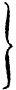

HET EILAND URK.
HET EILAND URK VAN DE ZUID-OOST ZIJDE GEZIEN
Harting del
[1]
Een der merkwaardigste plekjes van onzen vaderlandschen bodem is het kleine eilandje Urk. Gelegen midden in de Zuiderzee, heeft het sedert eeuwen te kampen gehad met de woede der golven en stormen, waaraan het meer dan eenig ander der in de Zuiderzee gelegen eilanden is blootgesteld, en, alhoewel het in dien strijd geenszins ongedeerd is gebleven, zoo ziet de reiziger, die van de Lemmer naar Amsterdam de zee oversteekt, het zich nog altijd als een groene heuvel hoog boven het watervlak verheffen, en de schipper vindt ligtelijk geloof, als deze hem verzekert, dat het eene rots is.
Inderdaad is die meening onder hen, die de Zuiderzee bevaren, algemeen verbreid, en zelfs zoude, volgens eenen schrijver1, die, door de nabijheid zijner woonplaats, beter dan menig ander in de gelegenheid was, om met de ware gesteldheid bekend te zijn, de bodem van Urk uit graniet bestaan, terwijl een ander2, die het eiland zelf bezocht, uitdrukkelijk [2]zegt, dat de bodem van het westelijk of hooger gelegen gedeelte rotsachtig is.
Echter was reeds Wagenaar de waarheid meer nabij geweest, toen hij, in zijne beschrijving van Urk3, zeide, dat het westelijkste gedeelte hoog zand is, en dat daarin vele zware steenen worden gevonden. Nog juister had zich een onbekend schrijver4 uitgedrukt, zeggende: „de grond is steenachtig en laat met reden vermoeden, dat dezelve gevormd is uit granietblokken, wier tusschenruimten zijn aangevuld met aarde.” Wanneer hij echter hierop laat volgen: „overal is het strand bezaaid met grootere en kleinere steenen, waarvan sommige met goud- en zilverdeeltjes bezwangerd, echter niet rijk genoeg om ze daaruit te halen,” dan ontstaat er eenige gegronde twijfel aangaande zijne geognostische en mineralogische kennis, en rijst het vermoeden, of hij ook de glinsterende goudgele en zilverwitte glimmerblaadjes der granieten en glimmerschiefers daarvoor heeft aangezien.
Intusschen mogt men, uit het door hem en Wagenaar medegedeelde, reeds met meer dan waarschijnlijkheid, het besluit afleiden, dat een deel van Urk tot de diluviale formatie behoort, gelijk dan ook door Dr. Acker Stratingh5 gedaan is, terwijl de gerolde blokken van graniet en andere plutonische gesteenten, welke in die formatie zoo veelvuldig worden aangetroffen, door hun groot aantal aanleiding hebben gegeven [3]tot het zoo algemeen verspreide volksgeloof, dat Urk eene rots is.
Doch er was nog een ander punt, hetwelk opheldering vorderde. Reeds lang namelijk was het bekend, dat er op Urk een aantal zoetwaterputten gevonden worden. Het bestaan van zoetwaterbronnen op een zoo klein eilandje, en derhalve in de onmiddelijke nabijheid der zee, is op zich zelf reeds merkwaardig, doch hier komt bij, dat men vindt opgeteekend, dat het water in eene dier putten, te gelijk met het tij der zee, rijst en daalt, en zelfs dat het daarin hooger of lager zoude staan, al naar gelang van den waterstand op de rivier de IJssel bij Kampen6.
Hoe gebrekkig na ook deze verschillende berigten waren, zoowel aangaande den bodem van het eiland als aangaande de daarop voorkomende zoetwaterputten, zoo mogt men er toch met eenigen grond uit afleiden, dat een nader onderzoek niet onvruchtbaar zoude wezen, en dat Scheltema7 met regt [4]reeds voor vele jaren geklaagd had: „het eiland Urk is te weinig door natuurkundigen bezocht.”
Toen ik in de lente van het vorige jaar eenigen tijd te Enkhuizen doorbragt, besloot ik derhalve een bezoek op dit eiland af te leggen, ten einde in de eerste plaats zijne geognostische gesteldheid nader te leeren kennen, doch tevens van die gelegenheid gebruik te maken, om zoowel door het verzamelen van voorwerpen, als door het inwinnen van berigten bij de inwoners, eenige bekendheid te erlangen aangaande de planten en dieren, welke dit kleine plekje gronds bewonen.
Den 29sten Maart begaf ik mij, voorzien van de noodige werktuigen tot meten en boren, daarheen, in gezelschap van drie jongelieden, door wier welwillende hulp het mij mogelijk was in een kort tijdsbestek veel af te doen, want reeds den 31sten daaraanvolgende keerden wij van daar terug.
Gedurende dit tweedaagsch verblijf, gelukte het mij reeds een tamelijk goed inzigt te verkrijgen van de geognostische gesteldheid des bodems van het eiland. Intusschen bleven er nog eenige vragen onbeantwoord, eensdeels uithoofde van het korte tijdsbestek, anderdeels omdat de gebezigde grondboor slechts eene lengte van 3,5 el had, en bovendien, na eenige boringen in den zeer vasten en harden leemgrond, geheel onbruikbaar was geworden8. Welkom was mij derhalve mijne onderwijl gevolgde benoeming tot correspondent der Hoofdcommissie voor de Geologische kaart van Nederland, waarin ik eene aanleiding vond, om aan die Commissie het voorstel te doen van eenige gelden beschikbaar te stellen, om op Urk nog op sommige door mij aangewezen [5]punten gravingen te doen bewerkstelligen, in welk voorstel door de Commissie dadelijk met bereidwilligheid werd toegestemd.
Deze gravingen werden verrigt onder de leiding—en ten deele ook in de tegenwoordigheid—van mijnen vriend den heer P. Backer de Wit, Apotheker te Enkhuizen, en verders onder het toezigt van den op Urk woonachtigen vuurtorenwachter A. Schraal, die zich tevens belastte met het verzamelen van monsters der gronden, telkens met verschil van 0,1 el in diepte, en bovendien van alle grootere en kleinere steenen en andere voorwerpen, die bij de gravingen gevonden mogten worden.
Ten einde den graad van juistheid der later mede te deelen uitkomsten te kunnen beoordeelen, volgt hier eene optelling van de plaatsen, waar geboord of gegraven is, met vermelding van de bereikte diepte onder den beganen grond. Deze plaatsen zijn door letters aangeduid op de bijgevoegde kaart.
Eerste boring (a) tot op 1,4 el diepte.
Tweede boring (b) tot op 1,5 el diepte.
Deze twee boringen op het hoogste punt (9,2 el boven A. P.) des eilands, achter de kerk der Hervormden, en op slechts 10 ellen onderlingen afstand, moesten beide gestaakt worden, omdat de boor op eenen granietsteen stuitte.
Derde boring (c) tot op 3 ellen diepte, aan de westelijke helling van het hooger liggend gedeelte, waar de bodem 3,5 el boven A. P. is gelegen.
Vierde boring (d) tot op 3,5 ellen, in het lager liggend gedeelte, nabij de grens van het hooger gelegene. De hoogte des bodems boven A. P. bedraagt aldaar 0,7 el.
De gravingen zijn alle, slechts met uitzondering van die op het punt D, voortgezet totdat het binnendringen van het welwater de verdere graving verhinderde, daar op Urk geene middelen voorhanden waren, om dit water te lozen. [6]
Bij de eerste en diepste graving (A), aan de westelijke helling van het hooger gedeelte, 4,3 el boven A. P. gelegen, was dit het geval, toen men tot eene diepte van 5,8 el was doorgedrongen.
Bij de tweede (B), op het driehoekig aangespoeld stuk gronds, tusschen den vuurtoren en de haven, bereikte men eene diepte van 1,9 el.
De derde (C), vierde (D) en vijfde (E) graving, alle in het lagere gedeelte des eilands, drongen tot eene diepte van 1 el en 1,1 el, terwijl men eindelijk op het zesde of laatste punt (F), op den zoogenaamden Staart, waar de hoogte boven A. P. niet meer dan 0,2 el bedraagt, de graving reeds op 0,3 el staken moest.
Wat de flora van het eiland betreft, zoo waren natuurlijk op het tijdstip, waarop ik het eiland bezocht, nog slechts weinige planten voorhanden. In deze leemte is echter later door den heer P. Backer de Wit voorzien, die zich op mijn verzoek, met dit doel, driemalen naar Urk heeft begeven, namelijk op den 24sten Mei, den 14den Junij en den 26sten Julij, en mij de door hem verzamelde meerendeels bloeijende planten heeft overgezonden.
De berigten aangaande de dierlijke bevolking zijn door mij, voor het grootste deel, ontleend aan de mededeelingen der bewoners. Alleenlijk de optelling van de aan het strand gevonden schelpen van Mollusken berust op eigene bevinding.
De opgaven van het getal inwoners sedert de invoering der registers van den burgerlijken stand ben ik aan den Burgemeester den heer P. Nentjes verschuldigd, even als verscheidene andere mededeelingen, die voor de kennis van het eiland van gewigt zijn. [7]
3 Zie zijne Beschrijving van Amsterdam, Dl. III. bl. 84, en De Tegenwoordige Staat der Nederlanden, Dl. VIII. bl. 628. ↑
4 In een artikel in het Nederlandsch Magazijn, 1834, bl. 218, geteekend G. V. S. Vermoedelijk dezelfde, aan wien men ook het artikel over Urk in van der Aa’s Aardrijkskundig Woordenboek der Nederlanden, Dl. XI, bl. 396, verschuldigd is. De daar gebezigde bewoordingen zijn althans dezelfde. ↑
6 Het oudste berigt dienaangaande vond ik in de kopij van eenen brief van N. Witsen aan G. Cuper, gedagteekend 18 Augustus 1709 en voorkomende onder de nagelaten papieren van wijlen Mr. Jac. Scheltema, thans berustende bij zijnen neef den Hoogleeraar C. A. Bergsma. Witsen schreef daarin: „Men bespeurt mede, dat bij zeer laag water omtrent het eiland Wieringen zoet water uit den grond ontspringt, hetgeen gewisselijk uit de onderaardsche kanalen komt. Ik meen ook aan UEd. gezegd te hebben, dat wij een put op Urk hebben, die met den IJssel rijst en daalt.” Wagenaar (Beschrijving v. Amsterdam, Dl. III. bl. 84,) vermeldt hetzelfde, er echter bijvoegende, dat hem verzekerd is, dat het water dezer put regenwater is, hetwelk van de hoogte afspoelt, en toe- of afneemt naar dat er veel of weinig regen valt. Van der Aa (l. c. p. 725) maakt gewag zoowel van eene rijzing en daling van het water in de putten met het tij der zee, als van eene beantwoordende aan den waterstand in den IJssel. Alleen het laatste wordt vermeld door den ongenoemden schrijver in het Nederlandsch Magazijn. De gronden, waarop deze meeningen steunen, worden door geen hunner aangegeven. ↑
8 De gebezigde boor was vervaardigd door W. Jenken te Utrecht, en voorzien, in plaats van een’ lepel, van eene ter zijde opene buis, eindigende in eene kegelvormig toeloopende schroef met ruime windingen. Deze soort van grondboren heeft het voordeel, dat de spiraalwindingen der schroef de in de buis opgeboorde grond als eene klep afsluiten en bij het ophalen tegenhouden. ↑
Onder de in de Zuiderzee gelegen eilanden is Urk datgene, hetwelk op den grootsten afstand van den vasten wal ligt. De afstand tot aan Enkhuizen bedraagt 20280 ellen, tot aan de Lemmer 20340 ellen, tot aan het vuur bij Kuinre 18840 ellen, en tot aan het Kampereiland en den mond des IJssels 17320 ellen. Het meest in de nabuurschap liggende Schokland is er 11400 ellen van verwijderd1.
Het eiland heeft eenen langwerpigen vorm, liggende de grootste afmeting nagenoeg juist in de rigting van het Zuid-Westen naar het Noord-Oosten. In deze rigting gemeten, bedraagt de lengte van het eiland,—met uitzondering van het smalle aanhangsel aan de Noord-Oostpunt, waaraan men den naam van de Staart heeft gegeven,—1800 ellen, terwijl de breedte, dat is de grootste afmeting van het Zuid-Oosten naar het Noord-Westen, 680 ellen is, en de geheele omtrek omstreeks 4230 ellen, dat is ongeveer drie vierde uur gaans. De oppervlakte bedraagt, volgens de kadastrale opmeting, 80 bunders 5 □ roeden en 62 □ ellen, waaronder 74 bunders 36 □ roeden en 44 □ ellen belastbaar land. Hieronder is niet begrepen het later aangespoelde stuk gronds tusschen den vuurtoren en [8]de haven, waarvan de oppervlakte 67 □ roeden en 50 □ ellen is, zoodat dan de geheele oppervlakte 80 bunders 73 □ roeden en 12 □ ellen beloopt.
Alleen met uitzondering van de op de kaart aangewezen punten, namelijk aan de Zuidzijde nabij de haven en langs een gedeelte der Oostkust, is het geheele eiland door paalwerk en eene steenen glooijing omgeven, ten einde het tegen het geweld der golven te beschermen.
Het bestaat uit twee verschillende gedeelten, waarvan het eene of kleinere, het zuidwestelijk deel uitmakend (op de kaart door wit aangeduid) zich hoog boven de zee verheft, terwijl het andere of grootere (op de kaart licht geharceerd) daarentegen zeer vlak en laag is.
Het hoog liggend gedeelte maakt ongeveer een vijfde van het geheel uit. De Westkust is het hoogst, en van daar daalt de bodem met eene zachte helling noordoostelijk naar het lager liggend gedeelte, en zuidoostelijk naar de havenzijde. Het hoogste punt (a) der westkust ligt juist achter de Kerk op niet meer dan 45 ellen van de zee verwijderd. De hoogte van dit punt boven A. P. bedraagt 9,2 ellen. Bij den vuurtoren (v) op de zuidwestpunt, 150 ellen van a af gelegen, is die hoogte 7,7 ellen. Aan de zee- of westzijde loopt de bodem langs dit geheele gedeelte der kust aanvankelijk met eene zeer steile helling af, vervolgens zachter glooijend tot aan het paalwerk, en zoo onder de steenen glooijing door naar de zee.
Tusschen het havenhoofd en de punt, waarop de vuurtoren staat, is een driehoekig stuk gronds (B) gelegen. Dit behoort oorspronkelijk niet tot dit hoog liggend gedeelte, maar heeft zich eerst in de laatste jaren gevormd, sedert den eersten aanleg der haven in het jaar 1819, uit het daar aangespoelde zeezand.
Het laag liggende gedeelte des eilands, ongeveer vier vijfde [9]van het geheel bedragende, onderscheidt zich dadelijk van het zoo even beschrevene, door dat het nagenoeg geheel vlak is, en zich over het algemeen slechts weinig boven de oppervlakte der zee verheft. Het eindigt aan de Noord-Oostpunt in den reeds genoemden Staart, zijnde eene lange, smalle, eenigzins gebogen strook of zandplaat, welker oppervlakte niet meer dan 0,1 tot 0,2 el boven A. P. ligt, en de bovenzeesche voortzetting is van het rif, dat het geheele eiland omgeeft.
Door de geheele lengte van het laag liggend gedeelte tot aan het begin van den Staart, breidt zich een zandrug uit, nagenoeg evenwijdig met de Noord-Westkust loopend, op eenen afstand van 35 tot 40 ellen van de zee. De breedte dezer rug verschilt van 15 tot 25 ellen, terwijl zij, ter plaatse, waar zij het hoogst is, dat is in de nabijheid van het hoog liggend gedeelte des eilands, zich tot 2,2 el boven A. P. verheft. Volgens mededeeling van den Burgemeester, die thans eenen ouderdom van 70 jaren heeft bereikt, is deze zandrug haar ontstaan verschuldigd aan de Noord-Wester stormen op den 14den en 15den November 1775 en den 20sten November 1776, toen het eiland van die zijde nog slechts gebrekkig tegen de zee beschut was.
Aan weerszijde loopt deze rug glooijend af, en wordt dus de bodem allengs vlakker en lager, het meest aan de Oostzijde, alwaar het middengedeelte tot voor korten tijd een moeras was, dat slechts in den allerlaatsten tijd, door het graven van een afwateringskanaal en de werking van een’ kleinen pompmolen, in droog land is herschapen. In 1842 is met deze droogmaking een aanvang gemaakt, en in 1851 heeft men er den eersten hooioogst ingezameld. Vóór 60 jaren was die kom nog diep genoeg om er paling in te visschen, en in 1789 besloeg dit moerassig gedeelte, blijkens eene toen door den Stadslandmeter J. Schilling vervaardigde kaart, waarop het onder den naam van verdronken land staat afgeteekend, eene oppervlakte [10]van 15 morgen en 554 □ roeden Amsterdamsche maat, of 12 bunders 39 □ roeden en 80 □ ellen, derhalve een zesde gedeelte van het geheele eiland.
De beide zoo even beschreven gedeelten des eilands zijn ook in een geognostisch opzigt geheel van elkander onderscheiden. Wij willen daarom elk in het bijzonder beschouwen.
De in het werk gestelde boringen en gravingen tot op eene diepte van 1,5 el onder A. P. en 10,7 ellen onder het hoogste punt des eilands, hebben hier vier verschillende lagen doen kennen.
De eerste en magtigste, op het punt a eene dikte hebbende van 8,3 ellen, aldaar eindigende op 0,9 el en in c op 1,5 el boven A. P., bestaat uit eene over het algemeen geelachtig rood gekleurde leem, waarvan echter de geaardheid zoowel als de kleur op verschillende punten en diepten nog aan vrij groote afwisselingen is onderworpen, hoofdzakelijk ten gevolge van het verschillend gehalte aan ijzeroxydhydraat, en het al of niet aanwezig zijn van koolstofzuren kalk. Deze ontbreekt algemeen in de hoogere gedeelten der laag, doch is daarentegen in grooten overvloed aanwezig in de diepere, waar de leem in waren leemmergel overgaat. De grond verkregen bij de graving op het punt A, op de diepte van 3 ellen, of van 1,3 el boven A. P., vooraf zwak gegloeid, bleek te bevatten 28,83 proc. in zoutzuur oplosbare stoffen, waaronder 19,71 proc. koolstofzuren kalk en 3,13 proc. ijzeroxyd. In het bovenste gedeelte is de leem ook meer zandachtig, lichter van kleur, plaatselijk zelfs geelachtig grijs, terwijl benedenwaarts de kleur donkerder wordt, ten [11]deele bruinrood en violetrood, al naar gelang van de hoeveelheid aanwezig ijzeroxydhydraat, welke stof in hoeveelheid toeneemt met de diepte, zoodat het benedenste gedeelte der bedding tot den aard eener ware oerbank nadert.
De mikroskopische bestanddeelen zijn gerolde kwartskorreltjes en scherpkantig gruis van kristallinische gesteenten, in afwisselende betrekkelijke hoeveelheden. Beide deze bestanddeelen zijn algemeen doorschijnend en kleurloos. Waar koolstofzure kalk voorkomt, bestaat deze meerendeels uit zeer kleine vormlooze ligchaampjes. Het ijzeroxydhydraat is er in bevat als zeer kleine moleculen, die alle de ruimten tusschen de overige bestanddeelen vullen. Van schelpvezelen is geen spoor te zien, evenmin als van Foraminiferen of andere mikroskopische organismen.
De hardheid en vastheid dezer geheele laag, doch vooral van hare diepere gedeelten, is zeer groot, en wordt inzonderheid veroorzaakt door het ijzeroxydhydraat, waardoor de overige deeltjes onderling zamengebakken zijn. Reeds is vermeld, dat de gebezigde grondboor daarin geheel onbruikbaar is geworden. Bij de derde boring namelijk, was aan de overigens uit goed gehard ijzer bestaande boorbuis, reeds eene vrij sterke uitwijking der wanden waar te nemen. Ook bij de later in het werk gestelde graving, werd de bodem zoo hard bevonden, dat men op sommige punten daarin met de spade alleen niet kon voortwerken, maar genoodzaakt was een’ koevoet te gebruiken, om de brokken los te breken.
Echter heeft deze leem slechts weinig plasticiteit, wanneer zij met water wordt aangemengd, hetgeen grootendeels het gevolg is van de talrijke tusschen de overige bestanddeelen verstrooide zandkorrels en steentjes van allerlei grootte. Deze geringe plasticiteit is ook opgemerkt door den tegenwoordigen Hoofdingenieur Jonkh. J. Ortt van Schonauwen, die in 1834, [12]bij het verbeteren der haven op de zuidkust, dezelfde leem aantrof, en zich genoodzaakt zag de voor het werk benoodigde klei van het lager gedeelte des eilands te doen aanvoeren.
In deze geheele bedding is het getal gerolde steenen overgroot. Het meerendeel is klein, van één tot eenige duimen in doormeter. Doch er komen ook vele merkelijk grootere rolsteenen voor. Ik zelf heb een granietblok gezien van nagenoeg ronden vorm en 0,7 el in doorsnede, hetwelk was opgegraven uit het kerkhof, gelegen ter zijde van de kerk, dus in de nabijheid van het hoogste punt. Ook verhaalde mij de doodgraver, dat hij eenmaal, bij het maken van een’ grafkuil, op eenen steen had gestoten, waarvan het zigtbare gedeelte de lengte van het geheele graf, zijnde 7 A. voeten of bijna 2 ellen, innam. Daar hier nu nimmer dieper gegraven wordt, dan tot op 7 voeten, zoo blijkt, dat althans het bovenste gedeelte der bedding rolsteenen van zeer aanzienlijke grootte bevat. Dit wordt ook bevestigd door eene mededeeling van den Burgemeester, dat namelijk in een huis, gelegen aan de Noord-Westzijde, voor eenige jaren, bij het graven van eenen kelder, een steen werd gevonden, welke zoo groot was, dat de kozijnen van een venster moesten worden uitgebroken, om hem uit het huis te verwijderen. Dezelfde berigtte mij in het algemeen, dat men op zeer verschillende diepten, van 6, 8, 10, 12, 15, 20 en zelfs meer voeten, groote steenen in den grond had gevonden, zoodat hieruit derhalve schijnt te volgen, dat zij door de geheele bedding verspreid liggen.
Wat den aard dier steenen betreft, zoo is deze zoo verschillend, dat men zonder overdrijving zeggen kan, dat de meeste rotssoorten hier door kleinere of grootere fragmenten worden vertegenwoordigd. Men vindt er1: [13]
1. Graniet. De hieruit bestaande steenen zijn zeer talrijk; zij kunnen tot de volgende varieteiten gebragt worden:
a. Zeer fijnkorrelige graniet, met gelijkmatig verdeelde bestanddeelen: roode veldspaath, roode kwarts en weinige zwartachtige glimmer. Hieruit bestaat de groote, zoo even vermelde uit het kerkhof opgegraven steen.
b. Zeer grofkorrelig, met ongelijkmatig verdeelde bestanddeelen: donker vleeschkleurige veldspaath, witte kwarts, ten deele in groote aders, en zilverkleurige glimmer in nesten. Stukken van deze zamenstelling zijn gevonden, zoowel op het kerkhof, derhalve in het bovenste gedeelte der laag, als nabij hare onderste grens in A, vanwaar een stuk van ongeveer 0,2 el in doormeter tot deze varieteit behoort.
c. Tamelijk fijnkorrelig en gelijkmatig, met veel roode veldspaath, witte kwarts en weinige witte glimmer.
d. Tamelijk fijnkorrelig, met roode veldspaath, witte kwarts en zwarte glimmer.
e. Tamelijk fijnkorrelig, met roode kwarts, roode veldspaath en zwarte glimmer.
f. Fijnkorrelig, met violetblaauwachtige kwarts, zeer weinige roodachtige veldspaath, zwarte en witte glimmer.
g. Fijnkorrelig, met witte kwarts, witte veldspaath en zwarte glimmer.
h. Fijnkorrelig, met witte veldspaath, witte kwarts en groene glimmer.
i. Tamelijk fijnkorrelig, met witte veldspaath, witte kwarts en veel zilverwitte glimmer.
Onder deze varieteiten zijn die, waarin de veldspaath en ook de kwarts geheel of ten deele rood gekleurd zijn, zoodat het [14]gesteente, op eenen afstand gezien, zich meer of min gelijkmatig rood vertoont, de talrijkste.
2. Syeniet.
a. Met witte kwarts, witte veldspaath, veel zwarte hoornblende en zeer weinig glimmer.
b. Met violette kwarts, zwarte hoornblende en weinige witte veldspaath.
c. Met veel roode veldspaath, witte kwarts en hoornblende.
d. Met labrador, violette, bloedroode, granaatroode en gele kwarts, hoornblende en weinige zwarte glimmer; deze bestanddeelen zijn gelijkmatig dooreengemengd. Een zoodanig stuk is in het bovenste gedeelte der laag gevonden.
e. Met vleeschkleurige en witte veldspaath, weinig witte kwarts, zwarte hoornblende en bronskleurige glimmer.
f. Met veel gedeeltelijk gekristallizeerde roode en witachtige veldspaath, witte kwarts en groene glimmer.
3. Gneis. Mede in verschillende varieteiten, waarvan de merkwaardigste zijn:
a. een stuk gneis van 0,14 el in doormeter, zijnde een fragment van eenen veel grooteren steen, bij het graven van de regenput bij den vuurtoren gevonden, veel zilverwitte glimmer bevattende en tusschen de massa verspreide edele granaten.
b. Dichroitgneis. Hiertoe behooren drie steenen van 3 tot 4 duimen in doormeter, gevonden in de diepere gedeelten der bedding, met daarin bevatte dichroit, welk mineraal ook afzonderlijk is aangetroffen.
Het meerendeel dezer graniet-, syeniet-en gneissteenen draagt de blijken van sterk en lang gerold te zijn. Eenige echter, en daaronder sommige tamelijk groote stukken—gelijk b. v. dat vermeld onder b op bl. 13,—hebben nog vrij scherpe kanten en hoeken, en vertoonen weinige sporen van afslijting. Ook de graad van verwering is zeer verschillende. Bij eenige steenen [15]is daarvan te naauwernood iets te bespeuren, zelfs aan de oppervlakte, terwijl daarentegen andere, en daaronder stukken van 3 en 4 duimen in doormeter, zoo door en door verweerd zijn, dat zij bij de minste drukking tot poeder vergruisd worden.
4. Porphier, rood gekleurde. De daaruit bestaande steenen zijn slechts, ter grootte van 2 tot 3 duim, in gering aantal gevonden.
5. Veldspaath. Eenige weinige der kleinere gerolde steenen, 1–2 duimen in doormeter hebbende, bestaan uit denzelfden rooden veldspaath, als die, welke een bestanddeel der meeste granieten uitmaakt.
6. Kwarts. Alhoewel er, gelijk reeds gezegd is (bl. 11), tusschen de overige bestanddeelen van de leem dezer bedding talrijke kleine (1⁄20–⅕ streep in doormeter hebbende) gerolde kwartskorreltjes voorkomen, zoo is het aantal van grootere gerolde stukken kwarts zeer gering. Sommige zijn melkachtig wit (vetkwarts), andere rood (ijzerkiezel), slechts zeer weinige helder en doorschijnend. De grootste stukken hebben eenen doormeter van 3 duimen.
7. Glimmerschiefer, in vrij talrijke stukken, waarvan de grootste 5 duim in doormeter hebben, meer of minder kwartsrijk, doorgaans fijnbladerig en ten deele verweerd.
8. Chlorietschiefer. Hiervan is slechts één stuk gevonden van eene graauwgroene kleur en 2 duim in doormeter.
9. Zandsteen. Brokstukken van zandsteenrotsen zijn door de geheele bedding verspreid, en wel als twee hoofdverscheidenheden:
a. glimmervrije zandsteen, eenige stukken geel, andere rood gekleurd, veel minder talrijk dan de volgende;
b. glimmerhoudende zandsteen. De meeste hiertoe behoorende stukken zijn hetzij lichtgrijs of wel geheel of ten deele door ijzeroxydhydraat geel gekleurd. De grootste in deze laag gevonden stukken hebben 4 duim in doormeter. [16]
Andere in geringer aantal voorkomende glimmerhoudende zandsteenen zijn tegelrood en harder dan de vorige. Hiervan zijn stukken aangetroffen tot van 8 duim in doormeter.
10. Zwarte kalkhoudende thonschiefer. Slechts eenmaal is een zoodanig stuk gevonden, 2 duim groot.
11. Kwartsiet. In geringe hoeveelheid, als roode of roodachtig witte gerolde korrels van 1 tot 2 duim in doormeter.
12. Klei. Op verscheidene punten zijn hiervan stukken gevonden van 2 tot 3 duim in doormeter, eenige bijna zuiver wit als pijpaarde, andere roodachtig wit en donkerrood, soms geheel het voorkomen hebbende der zoogenaamde Thongallen in zandsteen, en zich, behalve door meerdere taaiheid, van de omgevende leem onderscheidend door het geheel ontbreken van koolstofzuren kalk. De meeste dezer kleibrokken, zoo niet alle, zijn blijkbaar afkomstig van op de plaats zelve verweerden graniet, waarvan dikwijls nog kleine herkenbare stukjes zijn ingemengd.
13. Kalkgesteenten. Het aantal rolsteenen, geheel of grootendeels uit koolstofzuren kalk bestaande, is hoogst aanzienlijk, en overtreft dat van alle andere rotsgesteenten te zamen genomen.
In grootte doen de meeste kalksteenen onder voor vele der uit graniet, syeniet en gneis bestaande rolsteenen, doch er zijn toch ook van sommige der hieronder genoemde verscheidenheden steenen van eenen tamelijk grooten omvang gevonden.
Het getal dier verscheidenheden is vrij aanzienlijk. Men kan hen onder de volgende hoofdrubrieken rangschikken:
a. Marmer, als roode en witte of rood en wit geaderde stukken; de meeste sterk gerold, sommige eenen doormeter van 4 tot 5 duim hebbende.
b. Vezelige kalksteen. Hiervan is slechts eenmaal een plat stukje gevonden van 2 duim lengte.
c. Kalkspaath. Een enkel stuk, halfdoorschijnend, van 3 duim in doormeter, is gevonden in het onderste gedeelte der bedding. [17]
d. Vaste lichtgekleurde kalksteen, zeer fijnkorrelig, geheel homogeen van zamenstelling, dof en schelpachtig op de breuk, bijna zuiver wit, grijsachtig wit of licht geelachtig, in allen deele de kenmerken dragende van Jurakalk. De witte en geelachtig gekleurde stemt geheel overeen met Portlandkalk.
Het mikroskopische onderzoek leerde, dat deze kalksteenen geheel of grootendeels zijn zamengesteld uit zeer kleine (1⁄200 tot 1⁄20 streep in doormeter hebbende) rhomboëdrische kalkspaathkristalletjes2. De meeste stukken bevatten geene fossilen. Alleen in een witachtig grijs gekleurd stuk werden eenige overblijfselen aangetroffen van Pentacrinus pentagonais Goldfuss3. Deze soort van kalksteen komt tamelijk menigvuldig op alle punten der bedding voor. Alle de daaruit bestaande steenen zijn sterk gerold; sommige hebben eenen doormeter van 6 tot 7 duimen, doch de meeste zijn kleiner.
e. Blaauwachtig grijze kalksteen, minder fijnkorrelig dan de [18]vorige, ruw en oneffen op de breuk, met glinsterende kalkspaathkristallen, en zeer talrijke kleine, van 2 tot 3 streep in doormeter hebbende, fossilen insluitend, welke behooren tot de familie der Trilobiten. Bij beschouwing door de loupe zijn de van facetten voorziene oogen duidelijk zigtbaar, doch overigens is eene nadere soortbepaling moeijelijk, daar het niet gelukt hen te isoleren, uit hoofde van de hardheid der omgevende steenmassa en hunne eigene broosheid. Slechts eenmaal is een zoodanig stuk, dat sterk gerold was, gevonden op het kerkhof, en dus afkomstig uit het bovenste gedeelte der bedding.
f. Zwartachtig grijze kalksteen, in min of meer plaatvormige stukken, met verscheidene ten deele goed bewaarde schelpen van Leptaena depressa Dalm. (Productus depressus Sow.4), waartusschen talrijke exemplaren verspreid liggen van Beyrichia complicata Salt., door McCoy5 onder de Entomostraceën gerangschikt. De tegenwoordigheid dezer fossilen, hoe klein ook,—daar zij slechts een’ doormeter van hoogstens 2 streep hebben,—heeft echter eenige beteekenis, dewijl het geslacht Beyrichia, volgens McCoy, tot hiertoe alleen uit het silurische stelsel bekend is, en B. complicata zeer menigvuldig, en op een aantal verschillende plaatsen, in Engeland voorkomt in de schieferachtige kalksteenen, welke tot dit stelsel behooren. Ook de platte hoekige vorm der hier voorkomende stukken beantwoordt aan dezen oorsprong. Zij zijn vrij talrijk in het onderste gedeelte der bedding, terwijl hun doormeter van 3 tot 7 duimen bedraagt. Op één dezer stukken neemt men ijzerkieskristallen waar. [19]
g. Graauwe kalksteen, met een indruksel van Terebratula flabellula Sow.6 en een dergelijk stuk, hetwelk een fragment eener grootere Terebratula bevat, vermoedelijk T. plicatella Sow.7, als mede een afdruksel van eene Melania of van eene andere schelp behoorende tot een daarmede in vorm na overeenkomend geslacht. Stukken meer gerold dan de vorige, tot van 5 duim.
h. Bonte kalksteen, violet, rood, vleeschkleurig, wit en zeegroen gevlekt, fijnkorrelig, zonder kristallen, minder hard en vast dan de Portlandkalk, doch harder dan krijt. Een groot gerold blok van 0,45 el in doormeter, en eenige kleinere stukken zijn in het onderste gedeelte der bedding gevonden. Fossilen komen er niet in voor.
i. Wit krijt en vuursteenen. Beide zijn door de geheele bedding verspreid. De stukken krijt zijn alle gerold, de grootste van 3 duim. De daarin voorkomende Foraminiferen zijn Rotalia globosa en Textilaria acicularis, dezelfde, die het talrijkst in het Engelsche krijt worden aangetroffen. In de nabijheid der vuursteenknollen bevat het krijt bovendien vele naalden van zeesponzen. De meeste vuursteenen zijn scherpkantige fragmenten. Echter worden er ook verscheidene geheele knollen aangetroffen; de grootste heeft eenen doormeter van 4 duim. Meerendeels zijn zij zwartbruin of bruinachtig geel en half doorschijnend, eenige bleekgeel of roodachtig en ondoorschijnend.
Behalve de genoemde kalkgesteenten bevat de bodem nog talrijke uit koolstofzuren kalk bestaande rolsteenen, die minder duidelijk gekenmerkt zijn, doch gedeeltelijk, tot een der beschreven varieteiten (d en g) kunnen gebragt worden; de meesten zijn blaauwachtig grijs of grijsachtig wit.
Eindelijk zij hier nog vermeld, dat ik, door tusschenkomst [20]van den heer Backer de Wit, van den Mr. metselaar A. Last te Enkhuizen ontvangen heb een stuk van Astraea annularis Lam., hetwelk door hem in het jaar 1820 bij het bouwen der school op het eiland gevonden is, op eene diepte van 8 voeten onder den grond. Volgens zijne mededeeling bevonden zich daar ter plaatse nog verscheidene andere dergelijke ten deele grootere stukken, die verward door elkander lagen. Het stuk, dat ik onder de oogen heb, is 5 duimen lang en bijna 3 duimen dik en breed. Het heeft eenigzins afgeronde kanten, en ook de oppervlakte, waar zich de cellen bevinden, is glad afgeslepen, terwijl de kleur door geinfiltreerd ijzeroxydhydraat geelachtig is geworden, doch overigens komt het fossile exemplaar overeen met de nog in de Westindische zee levende voorwerpen.
13. Mergel, grijsachtig wit, gedeeltelijk violet, een stuk van 3 duim, in aard en kleur geheel overeenstemmend met stukken keupermergel, alhier op het mineralogisch kabinet voorhanden.
14. Doleriet, zeer fijnkorrelig, graauw, groen en sterk magnetisch. Een stuk van 5 duimen is gevonden in het onderste gedeelte der bedding.
Daar het nuttig kan zijn, voor eene latere vergelijking met hetgeen elders in ons vaderland in eenen bodem van overeenkomstige zamenstelling voorkomt, de verhouding te weten, waarin elk der rotssoorten tot de gezamenlijke hoeveelheid der gevonden steenen staat, zoo volgt hier eene lijst met de namen der rotssoorten en het aantal der daaruit bestaande steenen, verzameld bij de graving van den 5,8 ellen diepen kuil op het punt A. Onder dit aantal zijn echter alleen zulke steenen begrepen, wier doormeter 1 duim of meer bedraagt. Dewijl deze inzameling is geschied door den vuurtorenwachter, die in last had ontvangen alle de gevonden steenen zonder onderscheid aan mij over te zenden, zoo mag men aannemen, dat hier alle willekeur [21]buiten gesloten is geweest, en de cijfers inderdaad vrij juist de verhouding uitdrukken, waarin de verschillende steensoorten in dit gedeelte des bodems voorkomen.
| Graniet, a. roode | 43 | 9,4 proc. | 27,7 proc. | |
| Graniet,,, b. anders gekleurde | 36 | 7,9 proc.,, | ||
| Syeniet | 24 | 5,3 proc.,, | ||
| Gneis | 23 | 4,0 proc.,, | ||
| Porphier | 2 | 0,4 proc.,, | ||
| Veldspaath | 3 | 0,7 proc.,, | ||
| Kwarts | 6 | 1,3 proc.,, | ||
| Glimmerschiefer | 9 | 2,0 proc.,, | ||
| Chlorietschiefer | 1 | 0,2 proc.,, | ||
| Zandsteen, a. zonder glimmer, gele | 2 | 0,4 proc.,, |  | 5,6 proc.,, |
| Zandsteen,,, b. zonder,, glimmer,,, roode | 2 | 0,4 proc.,, | ||
| Zandsteen,,, c. glimmerhoudend, gele en grijze | 19 | 4,1 proc.,, | ||
| Zandsteen,,, d. glimmerhoudend, roode | 3 | 0,7 proc.,, | ||
| Kalkhoudende thonschiefer | 1 | 0,2 proc.,, | ||
| Kwartsiet | 2 | 0,4 proc.,, | ||
| Klei, a. witte | 2 | 0,4 proc.,, | ||
| Klei,,, b. roode | 6 | 1,3 proc.,, | ||
| Kalkgesteenten, a. marmer | 15 | 3,3 proc.,, | 53,8 proc.,, | |
| Kalkgesteenten,,, b. witte en gele Jurakalk | 29 | 6,3 proc.,, | ||
| Kalkgesteenten,,, c. graauwe, met duidelijke fossilen | 12 | 2,6 proc.,, | ||
| Kalkgesteenten,,, d. bonte | 5 | 1,1 proc.,, | ||
| Kalkgesteenten,,, e. kalkspaath | 1 | 0,2 proc.,, | ||
| Kalkgesteenten,,, f. vezelige | 1 | 0,2 proc.,, | ||
| Kalkgesteenten,,, g. niet nader bepaald, doch ten deele tot b en c behoorend | 183 | 40,1 proc.,, | ||
| Krijt | 15 | 3,3 proc.,, | ||
| Vuursteen | 10 | 2,2 proc.,, | ||
| Mergel | 1 | 0,2 proc.,, | ||
| Doleriet | 1 | 0,2 proc.,, | ||
| Som | 457 | |||
[22]
In deze bedding is ook nog op 2,3 ellen boven A. P. gevonden een stukje hout uit eene bruinkoolformatie. Het is ongeveer 2 duimen lang, ligt, bruin, doch niet met ijzeroxyd geincrustreerd. Het is gemakkelijk snijdbaar en stemt in maaksel zeer na overeen met het hout van Taxus baccata, daar de houtcellen van hofstippels en van eenen breeden spiraalband voorzien zijn. Het is derhalve afkomstig van eenen boom behoorende tot het fossile geslacht Taxites Goeppert.
De tweede laag, waarvan de dikte hoogstens een el bedraagt, bestaat uit eenen zwartachtig grijzen zandigen leemmergel, hier en daar met een’ geelachtigen of bruinachtigen tint. Zij onderscheidt zich van de hoogere, behalve door de kleur, vooral ook door eene meerdere gelijkmatigheid en inniger vermenging der bestanddeelen. De diepere gedeelten der laag bevatten het meeste zand en hebben eenen losseren zamenhang dan de hoogere.
De mikroskopische bestanddeelen zijn dezelfde als die der eerste laag, alleen in andere betrekkelijke hoeveelheden. Hetzelfde geldt van de scheikundige bestanddeelen. Koolstofzure kalk en ijzeroxyd komen er in merkelijk geringere mate in voor. De bodem op 0,3 el boven A. P., nagenoeg uit het midden der laag, bevat 8,27 proc. in zoutzuur oplosbare deelen, waarvan 4,87 koolstofzure kalk zijn en 1,29 proc. ijzeroxyd.
Er worden mede een aantal gerolde steenen in aangetroffen, grootendeels tot dezelfde rotssoorten behoorende als die in de eerst beschreven laag. Steenen van zoo grooten omvang als in deze zijn hier niet gevonden. Echter zoude ik niet durven beweren, dat zij er niet in voorkomen, daar dit gedeelte des bodems alleen uit de graving in A en de boring in c bekend is.
Onder de granietblokken zijn er verscheidene, die rood en groen gevlekt zijn, ten gevolge van tusschen de roode veldspaath [23]verspreid olivin. Een dier stukken heeft eenen doormeter van 10 duimen. Buitendien worden de meeste der boven beschreven varieteiten ook hier vertegenwoordigd.
De zandsteenen zijn mede dezelfde. Nabij de bovenste grens is er een gevonden van 18 duimen in doormeter, plat aan weerszijden, grijs en aan de eene zijde door ijzeroxydhydraat geel gekleurd.
Het geheele getal der steenen van één duim of meer in doormeter, bij de graving in A uit deze laag verzameld, bedraagt 104, die op de volgende wijze verdeeld zijn:
| Graniet, a. roode | 6 | 5,8 proc. | 21,2 proc. | |
| Graniet,,, b. anders gekleurde | 9 | 8,7 proc.,, | ||
| Gneis | 4 | 3,9 proc.,, | ||
| Veldsteenporphier | 1 | 0,9 proc.,, | ||
| Veldspaath | 2 | 1,9 proc.,, | ||
| Kwarts | 5 | 4,8 proc.,, | ||
| Zandsteen, a. zonder glimmer, gele | 1 | 0,9 proc.,, | 5,7 proc.,, | |
| Zandsteen,,, b. zonder,, glimmer,,, roode | 1 | 0,9 proc.,, | ||
| Zandsteen,,, c. glimmerhoudend, gele en grijze | 4 | 3,9 proc.,, | ||
| Kalkgesteenten, a. marmer | 1 | 0,9 proc.,, | 24,8 proc.,, | |
| Kalkgesteenten,,, b. Jurakalk | 5 | 4,8 proc.,, | ||
| Kalkgesteenten,,, c. bonte | 1 | 0,9 proc.,, | ||
| Kalkgesteenten,,, d. niet nader bepaald | 19 | 18,2 proc.,, | ||
| Krijt | 5 | 4,8 proc.,, | ||
| Vuursteen | 40 | 38,5 proc.,, | ||
| 104 | ||||
Hieruit blijkt, dat het voornaamste verschil met de vorige laag gelegen is in het aanzienlijk getal van vuursteenen, waaronder verscheidene groote knollen, tot van 9 duimen in doormeter.
Eindelijk is in deze laag ook nog gevonden een vrij goed bewaard fragment eener zuil, vermoedelijk van Actinocrinus laevis Mill., uit tien geledingen bestaande.
[24]
De derde laag wordt gevormd door eenen licht geelachtig grijzen leemachtigen zandmergel, in A de dikte van 1,3 el hebbende. Reeds is gezegd, dat de leemmergel der tweede laag benedenwaarts allengs zandachtiger wordt. Werkelijk is het ook niet wel mogelijk eene scherpe grens tusschen deze beide lagen te trekken, die integendeel schier onmerkbaar in elkander overgaan, in dier voege, dat de kleur al lichter en lichter, en de zamenhang der deelen al losser en losser wordt naarmate de diepte toeneemt. Dat deze twee lagen eigenlijk bij elkander behooren wordt ook nog daardoor bevestigd, dat in c (nabij de vuurtoren) onder de laag zandmergel wederom eene laag zwartgrijze leemmergel gevonden wordt, geheel gelijk aan de daar boven liggende. Straks zullen wij zien, dat het gevolg hiervan is, dat daar ter plaatse eene watergevende wel in de zandmergellaag is gevonden.
Ook deze laag bevat talrijke gerolde steenen, wederom grootendeels tot dezelfde rotssoorten behoorende als die in de hoogere lagen.
Onder de granietachtige gesteenten treft men er verscheidene aan, die geen waar graniet zijn, maar euriet of granuliet. De hier voorkomende zijn rood of wit gestreept.
Zandsteenen, beantwoordende aan de hooger liggende, zijn hier niet aangetroffen, maar, in stede daarvan, eenige stukken van eenen groveren en vasteren graauwackezandsteen of psammiet, de grootste eenen doormeter hebbende van 7 duimen.
Onder de kalksteenen verdienen, als niet in de hoogere lagen voorkomende, vermeld te worden: een violetrood en groen gevlekt stuk marmer, een geelgrijze harde kleihoudende kalksteen, en bovendien een stuk kalkhoudende kieselschiefer, zwartachtig grijs gekleurd, zeer fijnkorrelig, schelpachtig op de breuk, zonder fossilen, 7 duimen in doormeter hebbende.
Ook zijn hier wederom verscheidene stukken doleriet gevonden [25]en desgelijks eenige stukjes anamesiet, ter grootte van 1 tot 2 duimen.
Eindelijk nog een klein fragment van den rand eener schelp, die niet nader te bepalen is, doch, te oordeelen naar de witte kleur en de geringe fossilificatie, waarschijnlijk uit eene jongere tertiaire formatie afkomstig.
Het getal der verzamelde rolsteenen, van meer dan 1 duim doormeter bedraagt 118. Hiervan behooren tot:
| Graniet, a. roode (ten deele euriet) | 21 | 17,9 proc. | 24,6 proc. | |
| Graniet,,, b. anders gekleurde | 4 | 3,4 proc.,, | ||
| Gneis | 2 | 1,7 proc.,, | ||
| Hoornblende | 1 | 0,8 proc.,, | ||
| Veldsteenporphier | 1 | 0,8 proc.,, | ||
| Kwarts | 8 | 6,8 proc.,, | ||
| Glimmerschiefer | 7 | 6,0 proc.,, | ||
| Kalkhoudende kieselschiefer | 1 | 0,8 proc.,, | ||
| Kwartsiet | 3 | 2,6 proc.,, | ||
| Psammiet | 4 | 3,4 proc.,, | ||
| Kalkgesteenten, a. marmer | 1 | 0,8 proc.,, | 16,0 proc.,, | |
| Kalkgesteenten,,, b. Jurakalk | 1 | 0,8 proc.,, | ||
| Kalkgesteenten,,, c. kleihoudende | 1 | 0,8 proc.,, | ||
| Kalkgesteenten,,, d. niet nader bepaald | 16 | 13,6 proc.,, | ||
| Krijt | 8 | 6,8 proc.,, | ||
| Vuursteen | 33 | 28,0 proc.,, | ||
| Doleriet | 3 | 2,6 proc.,, | ||
| Anamesiet | 3 | 2,6 proc.,, | ||
| 118 | ||||
Vergelijken wij nu deze uitkomsten met die der hoogere lagen, dan komt men in het algemeen tot het resultaat:
1o. dat het aandeel der plutonische gesteenten zich tamelijk gelijk blijft;
2o. dat het aandeel der oudere kalkgesteenten in de bovenste laag verreweg het grootst is, en benedenwaarts afneemt; [26]
3o. dat daarentegen het krijt en de daaruit afkomstige vuursteenen in de diepere lagen het menigvuldigst zijn;
4o. dat er in geen der lagen fossilen gevonden worden, afkomstig van dieren, welke op de plaats zelve geleefd hebben, maar daarentegen verscheidene, die aan gesteenten van zeer verschillenden geologischen ouderdom eigen zijn.
De vierde of diepste laag, waartoe men is doorgedrongen, en welke in A op 1,5 el onder A. P. eenen aanvang neemt, bestaat uit zand, dat geheel vrij is van koolstofzuren kalk, en zich daardoor zeer wezenlijk van de hooger liggende lagen onderscheidt.
Bij de graving heeft men slechts een zeer klein gedeelte (0,1 el) van deze laag leeren kennen. Hier aan de bovenste grens, is het zand zeer fijn en nog niet geheel vrij van ingemengde leemdeelen.
Men mag aannemen, dat deze zandlaag zich onder het geheele hoogere gedeelte des eilands uitbreidt, daar,—gelijk later nog nader blijken zal,—het meerendeel der putten, zoo niet alle (alleen met uitzondering van die bij den vuurtoren) tot in deze laag doordringen en daaruit hun water ontvangen. De bodem van de put (p), in het midden van het hoogere gedeelte, ligt op 1,5 el onder A. P., dus juist op de diepte, waarop de zandlaag in A nabij de kust mede gevonden is (verg. de doorsnede in fig. 3), zoodat, alhoewel het waarschijnlijk is, dat de bodem van die put zich iets dieper onder de bovenste grens der zandlaag aldaar bevindt, hare helling in elk geval zeer gering is.
Of er in deze laag ook gerolde steenen voorkomen, kan ik niet beslissen, uit hoofde der te geringe diepte, waartoe men daarin gegraven heeft, maar in het daarvan ontvangen monster zijn er geene. [27]
De geognostische gesteldheid van dit gedeelte verschilt ten eenenmale van het hoogere en kondigt dadelijk eene jongere alluviaal-formatie aan.
Deze formatie is nog van tweederlei aard, namelijk eensdeels door aanspoeling uit de zee, anderdeels in zoet water ontstaan.
De geheele omtrek, voor zoo ver zij aan de zee grenst, wordt door zand bedekt. Langs de Noord-Oostkust, waar ook nu nog het paalwerk ontbreekt, en vroeger de reede is geweest, alvorens door het graven der haven voor eene betere ligplaats der schepen was gezorgd, is het strand door zand opgehoogd, ter hoogte van 1 el tot 1,5 el boven A. P., als het ware eene duinvorming op zeer kleine schaal daarstellende. Ook de overlangs evenwijdig met de Noord-Westkust loopende rug, welke reeds vroeger (bl. 9) vermeld is, bestaat enkel uit zand. Waar thans door paalwerk het verder opwerpen van het zand door de zee verhinderd is, en derhalve ook op den genoemden rug, daar is het zand op vele plaatsen bedekt met een dun laagje teelaarde, doch onmiddelijk daaronder treft men het zand aan.
De zoogenaamde Staart,—althans het bovenste gedeelte tot op 0,3 duim onder de oppervlakte,—is alweder geheel uit zand gevormd.
Eindelijk behoort hiertoe ook het, alhoewel aan gene zijde van het hooge gedeelte gelegen, door aanspoeling nieuw gevormde stuk gronds B. Bij eene graving tot op 1,9 el werd daarin niets dan zand gevonden.
De zamenstelling van dit zand is overal dezelfde. Het is tamelijk grofkorrelig, en bevat zeer talrijke schelpen (dezelfde die ook nu nog de omringende zee bewonen) en gelijke rolsteenen als die, welke nog dagelijks door de zee worden opgeworpen, en waarover wij straks nader zullen spreken. Alleen [28]vermeld ik hier, als min of meer de grens te kennen gevende van de kracht, die de golven der Zuiderzee vermogen uit te oefenen, dat op den zandrug, welks midden op eenen afstand van omstreeks 50 ellen van de zee is verwijderd, steenen gevonden worden tot van 20 duimen in doormeter, die derhalve door de stormen in de jaren 1775 en 1776 zijn opgeworpen. Behalve deze schelpen en steenen treft men hier en daar, in het zand gravende, ook eene derrieachtige massa aan, ten deele naar het schijnt uit losgewoeld veen bestaande.
In de nabijheid der Noord-Westkust, en waarschijnlijk ook aan de tegenovergestelde zijde, ligt onder het zand eene kleilaag. In het punt C is deze aangetroffen op eene diepte van 1,1 el. Deze klei sluit nog vele kleinere en grootere zandkorrels in. Dat ook zij door de zee is aangevoerd, wordt bewezen niet alleen door de talrijke daarin bevatte fragmenten van schelpen, welke tot dezelfde soorten behooren als die in het hooger liggende zand, maar ook worden er de kiezelschalen van Coscinodiscus cellosus, van Actinocyclus senarius, van eenen Actinoptychus en fragmenten van Nonionina germanica in aangetroffen.
Geheel het middengedeelte wordt daarentegen door eene zoetwater-formatie ingenomen. Nabij de oppervlakte treft men, in plaats van zand, eene zandige klei aan, plaatselijk afgewisseld met dunne veenstrooken, vooral in de nabijheid van het vroeger moerassige gedeelte, doch zelden eene grootere dikte hebbende dan van 5 tot 10 duimen, en grootendeels gevormd door mossen (Sphagnum, Hypnum), terwijl men op vele punten de gelegenheid heeft alle de opvolgende toestanden van dit zich vormend veen waar te nemen, van de nog frissche mosplantjes aan de oppervlakte af, tot aan de onderste geheel in veen overgegane laag toe.
Deze zandige klei bevat vrij talrijke kleine kwartskorreltjes en een scherpkantig gruis van kristallinische gesteenten; ook [29]komen er vele chlorietkorrels in voor, alsmede eenige straalsteenschilfers. Een gedeelte van het fijne gruis bestaat uit koolstofzuren kalk, doch van overblijfselen van zee-organismen komt geen spoor voor. Daarentegen zijn er de kiezelschalen van eene zoetwater-diatomee (Navicula Brebissonii Kütz.) op eenige punten in vrij groot aantal in aangetroffen, sommige nog eene groene kleurstof bevattende.
Benedenwaarts wordt deze klei allengs minder zandig, tot dat zij (in d op 0,25 el onder A. P.) in eenen donker gekleurden taaijen kleimergel overgaat, waarvan de mineralogische bestanddeelen dezelfde als die van de hooger liggende zijn, doch waarin alleen de betrekkelijke hoeveelheid der kwartskorrels minder is. In dezen kleimergel, vooral in de diepere gedeelten, treft men vele verveende plantenoverblijfselen aan.
Werkelijk rust deze kleimergel ook op eene laag waar veen, waarvan de bovenste grens (in d) op 1,5 el onder A. P. ligt, terwijl de onderste grens op 2,8 el onder A. P., zijnde het diepste punt der boring aldaar, nog niet bereikt is.
Dit veen draagt al de kenmerken van gewoon laag veen. Bij de boring zijn, op de grootst bereikte diepte, daaruit verscheidene stukken hout opgehaald, welke in allen deele beantwoorden aan dat van den gewonen wilgenboom (Salix alba), en daarmede bepaaldelijk in mikroskopisch maaksel geheel overeenstemmen. Deze boom, die thans volstrekt niet meer op dit gedeelte van het eiland voorkomt, heeft dus daar vroeger gegroeid, tenzij het hout er is aangespoeld gedurende de veenvorming, hetgeen echter minder waarschijnlijk is, omdat veen alleen in water ontstaat, waarin weinig strooming is. Dit hout is wel roodachtig bruin gevonden, doch overigens weinig veranderd. Zelfs bezitten de houtvezelen nog in hooge mate de taaiheid en buigzaamheid, welke aan het wilgenhout eigen zijn.
Op dezelfde plaats en uit gelijke diepte zijn ook eenige fragmenten [30]van beenderen opgeboord, welke afkomstig zijn van een rund. Herkenbaar zijn: een gedeelte der onderkaak met bijna drie kiesholten, een gedeelte der onderste geledingsvlakte van eene tibia, een gedeelte van een os hamatum, en een os sesamoideum. Deze beenderen zijn iets kleiner dan die van eene tegenwoordige volwassen koe.
Ten slotte blijft mij nog over hier iets te zeggen nopens het voorkomen van barnsteen op Urk. Ik heb mij vele vergeefsche moeite gegeven, zoowel tijdens mijn verblijf op het eiland, als later, door het meest zorgvuldig onderzoek der van daar medegebragte of mij toegezonden gronden, om daarvan iets te vinden, zonder dat het mij zelfs gelukt is het kleinste mikroskopische brokstukje te ontdekken. De zaak verdiende inderdaad dit naauwkeurig onderzoek, omdat het opwerpen van barnsteen door de zee tot het vermoeden zoude kunnen leiden, dat zich op geene zeer groote diepte onder den zeebodem eene bruinkolenbedding bevindt, welke barnsteen bevat, een vermoeden echter, dat nog meer grond zoude hebben, indien barnsteen niet zulk eene ligte zelfstandigheid is, zoodat de stukken van elders door de zee kunnen zijn aangevoerd.
Hoe het zij, zoo schijnt echter dit punt van genoegzaam gewigt, om, bij gebrek van eigene stellige uitkomsten, hier die berigten van anderen bijeen te stellen, welke de vraag, of er van tijd tot tijd barnsteen op Urk is gevonden, bijna met zekerheid bevestigend doen beantwoorden.
Het eerste berigt daaromtrent vind ik in de reeds vroeger (bl. 3) vermelde briefwisseling tusschen N. Witsen en G. Cuper. In eenen brief, gedagteekend 18 Aug. 1709, schreef de eerste:
„Op het eiland Urk heb ik weder barnsteen doen zoeken en gevonden: ’t is bijzonder, men vindt er barnsteen in de aarde, welke ontdekt werd als de zee het land afspoelde en wel allerhande [31]soort, witte, geele, heldere en donkere van kleur, ja in sommige stukken zie ik onreinigheden van bladertjes, als andersins.”
Ook het antwoord van Cuper aan Witsen moge hier eene plaats vinden, als zijnde kenmerkend voor de meeningen van dien tijd, aangaande den aard des barnsteens. Den 23 Augustus van hetzelfde jaar schreef hij:
„Hetgeen UWE. mij schrijft van barnsteen op Urk is zeer opmerkelijk, te meer dewijl het mij toeschijnt dat hetzelve wordt gehaald uit den grond en uit de aarde van dit eiland, en dat de zee hetzelve afspoelende ontdekt waar het ligt. Ik verzoek U dit nader te onderzoeken en te doorgronden, omdat het zoo verschilt van het begrip van kenners, die vermeenen, dat deze stof liquida uit de aarde komt en opdrijvende uit de zee, na zich neemt wat het ontmoet, vliegjes, visschub enzv.”
Aan dit berigt sluit zich de volgende brief van Martinet, medegedeeld door Le Francq van Berkhey8, aan wien hij gerigt was.
„De heer Weerman, predikant te Urk, schrijft mij (aan Martinet), oudtijds wierden er ware barnsteenen, geel en helder, brandende als kaarsjes, op ons Eiland gevonden, dog nooit in menigte. Men vond ze alleen nu en dan meer of min. In ’t begin dezer Eeuw waren de Jongens gewoon dezelve aan strand op te zoeken, voor den Wel Ed. Gr. Achtb. Ambachtsheer Nicolaas Witzen, Burgemeester der Stad Amsterdam9, die hier jaarlijks kwam en dezelve van de Jongens kogt: dog sedert dien tijd is er geen werk gemaakt om ze op te zoeken, en ook weinig meer gevonden, en dus niet mogelijk om ze geredelijk [32]te verzorgen. Niet uit schepen die vergaan zijn, maar door de natuur zijn ze hier aangespoeld, en wierden gevonden in eene zekere soort van zwarte aangespoelde Mollemaarde of molmachtigen Veengrond, gelijk ik zelfs, in het begin van mijne Dienst, wanneer nog een groot stuk Lands, buitendijks, zich Noordoostwaarts naar de Lemmer uitstrekte, een van die soorten van Barnsteen aldaar in aangespoelde Molmaarde of Veengrond gevonden heb, een halve vingerkop groot, welke ik aan mijn eerwaarden Vader present gedaan heb, maar sedert dat het opgemelde agter Buitendijksland weggespoeld en niet meer daar van dan een vlakke steenachtige strand overgebleven is, worden die steenen, zooveel mij bekend is, niet meer gevonden, enzv.”
Behalve op Urk, is ook op het naburige Schokland barnsteen gevonden10.
Ofschoon nu in lateren tijd de barnsteen op geen dezer beide eilanden meer is ontmoet, zoo laten echter de daaromtrent medegedeelde berigten geenen twijfel over, of het is aldaar vroeger voorgekomen, en wel, naar allen schijn, opgeworpen door de zee. Tevens echter blijkt daaruit, dat de hoeveelheid ten allen tijde zeer gering geweest is. De mollemaarde, waarvan in deze berigten sprake is, zoude het vermoeden kunnen versterken, als of deze barnsteen afkomstig was uit eene door de zee omgewoelde bruinkolenlaag, doch reeds boven hebben wij gezien, dat tusschen het zand, dat het vroegere zeestrand vormde, zich veel derrie bevindt. Hoogstwaarschijnlijk was het deze, waarin men den barnsteen vond. Deze derrie nu draagt alle de kenmerken van losgespoeld veen. Van hout van coniferen, die zoo algemeen in de bruinkolenbeddingen voorkomen, en bepaaldelijk [33]in die, welke den barnsteen bevatten, is geen spoor te vinden.
Maar bovendien is het genoeg bekend, dat de barnsteen zeer veelvuldig voorkomt in zand- en leemgronden, gelijk inzonderheid langs de geheele Oostzeekust het geval is. Hij is daarheen gevoerd uit andere tertiaire bruinkolenbeddingen, en het zoude derhalve zeer wel mogelijk kunnen zijn, dat barnsteen ook hier en daar onder het Zuiderzeestrand ligt, zonder dat zulks daarom nog eene nabij zijnde bruinkolenbedding verraadt. Het soortelijk gewigt van barnsteen is 1,08; het verschilt derhalve zeer weinig van dat van water, en gevolgelijk kunnen stukjes, gelijk op Urk gevonden zijn, zeer gemakkelijk van groote afstanden daarheen door den stroom der zee zijn overgevoerd.
Het is den zeevarenden op de Zuiderzee genoeg bekend, dat het vaarwater in den onmiddelijken omtrek van Urk zeer onveilig is, uithoofde van de geringe diepte der zee in de nabijheid van dit eiland. Deze ondiepte, gewoonlijk bekend onder den naam van het Rif van Urk, is op de bijgevoegde kaart11 aangeduid, tevens met de diepten des zeebodems onder A. P., volgens de reeds vermelde Zuiderzee-kaart van den Luitenant van Rhijn. Alleenlijk zijn de cijfers vermeerderd met 2 palm, zijnde dit ten naastenbij het verschil tusschen laag water en A. P.
Op de hier achter gevoegde plaat, stellen fig. 1, 2, 3 en 4 eene reeks van doorsneden voor, volgens de op de kaart door de lijnen [34]O P, Q R, S T en U V aangewezen rigtingen. Deze doorsneden zijn, wat de horizontale uitbreiding betreft, op dezelfde schaal geteekend als de kaart, namelijk op die van 1⁄20500, terwijl voor de vertikale hoogte en diepte de schaal van 1⁄1000 is gekozen. Alle hellingen zijn dus in werkelijkheid ruim 20 maal vergroot voorgesteld. De lijn A P duidt in alle figuren de wateroppervlakte aan; de bijgevoegde cijfers geven de hoogten en diepten boven en onder A. P. te kennen, terwijl door 0 0 de plaatsen worden aangewezen, waar de bodem onder de wateroppervlakte daalt en zich in land- en zeebodem scheidt.
Het blijkt, zoowel uit de kaart als uit deze doorsneden, dat het rif zich rondom het eiland als een onderzeesch plateau uitbreidt, dat, vooral aan de Westzijde, op vele punten digt onder de wateroppervlakte is gelegen. Ook gebeurt het bij zeer laag water van tijd tot tijd, dat het rif grootendeels droog komt, zoodat de eilandbewoners zich tot nabij zijnen rand droogvoets kunnen begeven.
Aan de Oostzijde ligt niet alleen de oppervlakte van het rif in het algemeen dieper, maar zij loopt ook langzaam glooijend af tot aan het punt, waar de zee hare gewone diepte heeft bereikt welke, aan die zijde (tusschen Urk en Schokland), nergens meer dan 4 ellen, doorgaans slechts 3,6 tot 3,8 el bedraagt.
Daarentegen is aan de Westzijde de helling aan den rand van het rif veel steiler (zie fig. 1 en 2), zoodat de diepte op eenen korten afstand van dien rand snel toeneemt. Ook is het daarbuiten gelegen gedeelte der zee sedert lang bekend onder den naam van het Val van Urk, dat, aan de andere zijde begrensd door het Enkhuizer zand, werkelijk eene soort van onderzeesche vallei of dal daarstelt, waarvan de grootste diepte 5,6 el bedraagt, zijnde dit tevens de grootste diepte der Zuiderzee bezuiden Enkhuizen, alleen met uitzondering van een paar punten op de hoogte dier stad zelve, waar de diepte tot 6,2 el onder A. P. bedraagt. [35]
De bodem van dit geheele rif bestaat uit grof zand met gerolde steenen, waaronder vele van buitengewone grootte, vooral op het westelijk gedeelte. Ik zelf heb verscheidene dier steenen gezien, welke 1 tot 1,5 el in doormeter hadden, en waarvan sommige nog slechts fragmenten waren van merkelijk grootere steenen, die men, bij laag water, door middel van kruid had laten springen. Ook deelde de Burgemeester mij mede, dat men in vroegeren tijd steenen had gevonden van 15 voet of ruim 4 ellen in doormeter, doch dat steenen van die grootte thans zelden meer voorkomen.
Reeds sedert vele jaren hebben de eilanders die steenen van het rif opgehaald, ten einde deze te verkoopen voor steenglooijingen aan de zeedijken, en het gevolg hiervan is, dat de steenen op dit rif allengs zeer in aantal verminderd zijn, en, dewijl alleen die, welke aan deszelfs oppervlakte gelegen zijn, worden verzameld, zoo kan men hieruit eenigermate besluiten tot de verbazende steenenmassa, die hier eenmaal op een kort bestek is bijeen gehoopt geweest12.
Toen ik het eiland bezocht, vond ik er echter nog vele op een’ grooten hoop gestapeld aan het strand nabij de haven, die men daar kortelings uit de zee had aangebragt, zoodat ik de welkome gelegenheid had, om den aard dier steenen nader te kunnen onderzoeken. De aldaar verzamelde rolsteenen bestonden uit:
1. Graniet, a. een brokstuk van eenen grooteren rolsteen; de doormeter van het fragment bedroeg 1,25 el; de bestanddeelen waren: witte veldspaath (olikoglas), witte kwarts, zwartachtig [36]groene glimmer en eenige weinige hoornblende, waardoor deze steen tot syeniet nadert.
b. Een brokstuk van 0,75 el in doormeter, met roozenroode veldspaath, witte kwarts en donkergroene glimmer; deze bestanddeelen zijn zeer ongelijkmatig gemengd.
c. Een geheele rolsteen van 0,85 el in doormeter, bestaande uit zeer veel tegelroode veldspaath, weinig graauwe kwarts, en bijna geen glimmer.
d. Een geheele rolsteen van 0,5 el in doormeter, fijnkorrelig, met graauwwitte veldspaath en kwarts, en zwarte glimmer.
e. Een brokstuk van 0,5 el in doormeter, fijnkorrelig, de hoofdmassa bestaande uit witte, roode en groenachtige kwarts; verders uit roozenroode veldspaath en weinig groenachtig gekleurde glimmer.
2. Syeniet. Twee brokstukken, van geheel dezelfde rotssoort, die waarschijnlijk gedeelten van denzelfden door kruid gesprongen steen hebben uitgemaakt. Het grootste heeft eenen doormeter van 1,5 el, het kleinste van 0,75 el. De bestanddeelen zijn: roode veldspaath, witte kwarts, zwarte glimmer en hoornblende, en bovendien triphaan.
3. Gneis. Een brokstuk van 0,9 el, met gelijke bestanddeelen als 2, alleen laagswijze geordend.
4. Euriet, een rolsteen van 0,75 el in doormeter, wit met roode aders, granaten insluitend.
5. Lichtgrijze kalksteen, een rolsteen van 0,5 el in doormeter, tamelijk homogeen en hard, met onduidelijke fossile schelpen.
Behalve door deze groote blokken, bestond er nog gelegenheid om den aard der steenen van het rif te leeren kennen door die, welke de zee op het strand geworpen heeft, zoowel op de Staart als langs de Noordoostkust en op het nieuwlings aangespoelde stuk gronds bij de haven. Natuurlijk zijn deze steenen [37]over het algemeen kleiner, doch er bevinden zich toch onder van 0,2 el in doormeter. Zeer vele dier steenen stemmen volmaakt overeen met die, welke in den bodem van het hoogliggend gedeelte des eilands voorkomen. Men treft daaronder aan: verschillende soorten van graniet, waarvan de roode ook hier de overhand heeft; ook is daaronder een stuk goed gekenmerkt schriftgraniet gevonden; verders syeniet, gneis, waaronder één stuk met donkerroode veldspaath en kwarts in zeer duidelijke scherp afgescheidene dunne lagen; voorts euriet, veldsteenporphier, witte en violetroode kwarts, zwartachtig groene hoornsteen, gele zandsteen, marmer, lichtgeelachtig witte Jurakalk, blaauwachtig grijze kalksteen, krijt en talrijke vuursteenen.
Bovendien werden er nog, als fossilen uit oudere lagen afkomstig, op het strand tusschen de rolsteenen gevonden: eene geheel in kalkspaath veranderde Astraea rotularis Michelin, waaraan, ten gevolge der afslijting, de cellen alleen nog op sommige plaatsen goed herkenbaar zijn, en een steenkern, waarschijnlijk van Melania Zenkeri Dunker.
De thans medegedeelde uitkomsten van het onderzoek des bodems van Urk en van het rif, dat dit eiland omgeeft, bewijzen voldingend, dat het hooger liggende gedeelte met het rif van diluvialen, het lagere gedeelte daarentegen van alluvialen oorsprong is.
Merkwaardig is voorzeker de groote magtigheid van de diluviale leembank, welke het westelijk gedeelte des eilands vormt, en die wel nog uit onderscheidene lagen bestaat, doch welke blijkbaar allen eenen gelijken oorsprong hebben gehad, daar de grootere rotsfragmenten daarin van gelijken aard zijn, ofschoon zij in het betrekkelijk aantal van elke soort verschillen. Wel is [38]waar worden dergelijke leembanken op vele andere punten in onzen diluvialen zandbodem gevonden, doch doorgaans van eene veel geringere dikte. Echter komen er elders voor, die eene nog veel grootere magtigheid hebben13.
Dat die leembank vroeger eene grootere uitgestrektheid heeft gehad, mogen wij als zeker stellen, want, hoe vast de bodem ook zij, zoo is zij toch geenszins bestand tegen de door eenen hevigen wind opgeruide golven. Tijdens den storm in Februarij 1825, toen de kust door paalwerk en steenglooijing nog niet zoo beschut was, als tegenwoordig, werd, volgens het verhaal van den Burgemeester, de hooge westzijde zeer beschadigd, zoodat op vele plaatsen het benedenste gedeelte geheel door de golven was weggeslagen en de kust bijna loodregt was geworden. Ook de vuurbaak is, uithoofde van het wegspoelen des bodems, herhaalde malen meer binnenwaarts moeten verplaatst worden. Opgerigt in het jaar 1617, stond zij in 1649 nog 112 voeten of 30 ellen van den zeekant, terwijl in 1661, dus slechts twaalf jaren later, die afstand tot op 30 voeten of 8,5 el verminderd was14. Ook zoude er in vroegeren tijd, toen het eiland grooter was, ten Zuiden van hetzelve en ten Oosten van het Val van Urk, eene kerk gestaan hebben15, volgens anderen16 zelfs een dorp tusschen het eiland en de houtrib17, [39]waarvan nog bij menschengeheugen overblijfsels bestonden, zelfs zoo veel muurwerk, dat de schippers het moesten vermijden.
Dat het eiland ook aan de Oostzijde in omvang verloren heeft, zullen wij straks zien, doch het aangevoerde is voldoende ten betooge, dat ook het hooge diluviale gedeelte zich vroeger verder in zee heeft uitgestrekt. Inderdaad is dan ook de stelling zeer waarschijnlijk, dat eertijds het geheele Oostelijk gedeelte van het rif daartoe heeft behoort, en dat, terwijl door de zee het fijnere slib is weggespoeld, het zand en de steenen op de plaats zijn blijven liggen. Hiervoor pleit ook de zonderlinge wigvormige gedaante van dit hooge gedeelte, als het ware de helft van eenen vroegeren diluvialen heuvel voorstellende, terwijl de andere thans verdwenen helft naar de Westzijde waarschijnlijk mede langzaam glooijend afliep.
Wat de wijze aanbelangt, hoe deze leem- en leemmergelbank met de groote daarin besloten gerolde rotsblokken op die plaats gekomen is, zoo is voorzeker thans de tijd nog niet gekomen, om op goede gronden eene keuze te doen uit de vele hypothesen, die, ter verklaring van het ontstaan der geheele formatie, waartoe dit gedeelte van het eiland behoort, zijn uitgedacht. Alleenlijk kan men eenige waarschijnlijke gissingen opperen, aangaande den oorsprong der in den bodem gevonden steenen.
Even als veelal in het diluvium,—doch hier te opmerkelijker, uit hoofde van de vastheid der massa, waarin zij bedolven liggen,—vinden wij gesteenten uit alle tijdvakken, van [40]de oudste plutonische rotsen af, tot aan de bruinkool der tertiaire periode toe, in de grootste verwarring dooréén liggen. Talrijke varieteiten van graniet, syeniet en gneis, kalksteenen, die, blijkens de daarin voorhanden versteeningen (Leptaena depressa, Beyrichia complicata, Actinocrinus laevis), tot het silurische en devonische stelsel behooren, andere kalksteenen, die tijdens de Juraperiode gevormd zijn, en de daaraan eigene fossilen (Pentacrinus pentagonalis, Terebratula flabellula, T. plicatella) bevatten, verders mergel, zandsteenen van verschillenden aard en waarschijnlijk ook van zeer verschillenden ouderdom, krijt en vuursteenen, hout van eenen Taxites uit eene tertiaire laag, zelfs de uit vulkanische streken afkomstige doleriet en anamesiet,—ziedaar het bonte geheel, welks ontcijfering voorzeker altijd uiterst moeijelijk zal blijven. Intusschen kunnen wij reeds nu op enkele punten opmerkzaam maken. Vooreerst op het zeer in het oogloopend verschil tusschen de steenen welke in den Urkschen bodem voorkomen, en die, welke in de zuidelijke streken van ons vaderland in diluviale gronden worden aangetroffen. Steenen, die eenen zuidelijken of zuidoostelijken oorsprong, namelijk van het Ardenner- of Nederrijnsche leigebergte zouden verraden, en waarvan op onze Noordbrabandsche, Geldersche en Utrechtsche heidevelden velen worden gevonden, komen op Urk nagenoeg volstrekt niet voor, en zelfs gelijken de grauwacke-zandsteenen of psammieten, die in geringen getale, slechts één op de tweehonderd, aldaar zijn aangetroffen, weinig op die, welke in zuidelijker streken voorkomen. Daarentegen is de Urksche bodem zeer rijk aan kalkgesteenten, zoo zelfs, dat de daaruit bestaande rolsteenen alle de overige gezamenlijk in aantal overtreffen, terwijl deze, gelijk men weet, in de zuidelijker streken van het diluvium zeer spaarzaam gevonden worden.
Meer overeenkomst schijnt het Urksche diluvium te hebben met dat van den Hondsrug bij Groningen, gelijk dit door Dr. Ali [41]Cohen18 beschreven is. Echter zoude eene naauwkeurige vergelijking der op de beide plaatsen gevonden rotssoorten noodig zijn, om die gelijkheid vast te stellen. Ook is er een verschil, dat niet geheel uit het oog mag verloren worden, dat men namelijk in den Hondsrug zelden vuursteenen aantreft19, terwijl deze daarentegen in den Urkschen bodem in grooten overvloed voorkomen. Eindelijk mag men ook vermoeden, dat de diluviale gronden van Steenwijk, van het Roode klif en van het hoog liggende gedeelte van het eiland Wieringen, met dit gedeelte van Urk eenen gelijken oorsprong hebben gehad, doch slechts later onderzoek kan de gegrondheid van dit vermoeden aantoonen.
In de tweede plaats geven de gevonden rotsfragmenten eenige, zij het dan ook nog onzekere, gronden aan voor gissingen aangaande de oorspronkelijke plaatsen, van waar die steenenmassa afkomstig is.
Dat velen de gerolde rotsblokken, uit graniet enzv. bestaande, en welke niet alleen in ons vaderland, maar ook in Engeland en in het noorderdeel van Duitschland tot in Rusland toe, een zoo algemeen bestanddeel der diluviale formatie uitmaken, als uit Scandinavie afkomstig beschouwen, is genoeg bekend. Ook de geaardheid van vele der plutonische gesteenten stemt met dit gevoelen overeen. Vooreerst pleit daarvoor het zeer veelvuldig voorkomen der roode varieteiten van graniet, waarop ook reeds vroeger Hausmann20 zich beroepen heeft. Ten tweede, de tegenwoordigheid van schriftgraniet, en ten derde van labrador in sommige der syenieten. Zoowel het eene als de andere behooren, zoo al niet uitsluitend, toch vooral in het Noorden te huis. Eindelijk heb ik ook nog gelegenheid gehad de Urksche gesteenten [42]te vergelijken met uit Noorwegen afkomstige rotsfragmenten in de verzameling van den heer F. C. C. Everts, predikant te Enkhuizen, en door hem zelven, tijdens zijn verblijf aan de Noorweegsche westkust, van de rotsen afgeslagen. Uit die vergelijking is mij gebleken, dat er werkelijk tusschen sommige der granieten, syenieten en gneisen zoo groote overeenkomst is, dat men hen voor van dezelfde rots zoude houden.
Echter ben ik verre van te willen beweeren, dat alle de talrijke varieteiten van plutonische gesteenten, die in den bodem van Urk voorhanden zijn, stellig eenen noordschen oorsprong hebben. Eenige hunner gelijken zoo zeer op dergelijke gesteenten uit Schotland, alhier in het mineralogisch kabinet aanwezig, dat men zeer geneigd wordt hen als van daar afkomstig te beschouwen. Deze meening wordt nog versterkt, door de talrijke vuursteenen en het krijt, dat geheel beantwoordt aan het krijt der Engelsche kusten, en waarvan vooral de onderste lagen der leembank eene aanzienlijke hoeveelheid bevatten. Ook zijn de overige gevonden gesteenten geenszins in strijd met eenen westerschen oorsprong, maar sommige schijnen dezen veeleer aan te duiden. Bepaaldelijk geldt zulks van de vrij talrijke kalksteenen met Beyrichia complicata, hoogstwaarschijnlijk tot het silurische stelsel behoorende (zie bl. 17), terwijl het verders niet moeijelijk zoude zijn, voor alle de andere gesteenten in Engeland meerdere vindplaatsen aan te wijzen, vanwaar men met eenigen grond zoude kunnen vermoeden, dat de Urksche steenen gekomen zijn. Doch zulk eene optelling zoude voor het oogenblik zeer weinig waarde hebben, te meer, dewijl men, welligt met even veel grond, dergelijke vindplaatsen in andere niet zeer ver verwijderde oorden zoude kunnen aantoonen. Ik onthoud mij er derhalve van, het aan lateren tijd overlatende, om over dit moeijelijke vraagstuk meer licht te verspreiden.
[43]
Thans van het hoogere op het lagere, of van het diluviale op het alluviale gedeelte des eilands overgaande, herinner ik in de eerste plaats, dat het onderzoek geleerd heeft, dat hier het geheele middengedeelte uit eene zoetwaterformatie bestaat, namelijk uit veen en daarop rustende klei, en dat alleen de randen langs de Noordwest- en Oostkust door eene zeeformatie zijn bedekt. Blijkbaar is hier de zoetwaterformatie de oudere, en de zeewaterformatie de jongere.
Deze daadzaak, dat de oudere alluviale formatie van Urk in zoet water is ontstaan, is niet onbelangrijk. Zij bewijst namelijk onwedersprekelijk, dat dit lage gedeelte zich eerst gevormd heeft, nadat, door de ophooging der noordelijke en westelijke kusten van ons vaderland, er een soort van wal was ontstaan, welke eene lagune omgaf, waarvan het meer Flevo, dat het zoete water uit één der Rijnarmen ontving, het laatste overblijfsel was21. Vóór [44]dien tijd, en zelfs lang voor dat er iets van het tegenwoordige Noord- en Zuidholland en van het grootste deel van Friesland boven de zee verrezen was, of, met andere woorden, op een tijdstip, toen dit geheele gedeelte van ons vaderland nog zee was, lag reeds de diluviale kern van Urk in die zee, als een eilandje, dat echter, gelijk wij zagen, toen eene grootere uitgebreidheid had dan het tegenwoordige hoog liggend gedeelte. Eerst nadat de met zoet water gevulde lagune ontstaan was, werd die kern het steunpunt voor de latere alluviale formatie, terwijl nog later,—toen, ten gevolge van het weder wegspoelen der gronden, die vroeger het meer Flevo aan de Noordzijde omzoomden en van de zee afsloten, zich de Zuiderzee had gevormd,—het zee-alluvium ontstond, dat thans het zoetwater-alluvium als een gordel omgeeft.
Dit bewijst, dat er althans een tijd is geweest, dat Urk een eiland in het meer Flevo was, en, daar nu de beide andere in de Zuiderzee gelegen eilanden, Marken en Schokland, geheel van alluvialen oorsprong zijn, zoo zoude men welligt vermoeden kunnen, dat Urk voor het eiland Flevo moet gehouden worden, waarvan Mela gewag maakt, en welks ligging nog zoo raadselachtig is, dat niet minder dan vijf uiteenloopende meeningen [45]daaromtrent hare verdedigers hebben gevonden22. Intusschen leert eene nadere overweging weldra, dat het niet hetzelfde eiland heeft kunnen zijn, als dat, hetwelk door Mela bedoeld werd, daar op den tijd, waarvan hij spreekt, de alluviale streken van onzen vaderlandschen bodem reeds bestonden en bewoond werden, en zelfs eene grootere uitgebreidheid hadden, dan in onzen tijd. Men moet derhalve ook wel aannemen, dat het alluviale gedeelte van Urk niet alleen toen reeds aanwezig was, maar zelfs zijn er verscheidene feiten, die bewijzen, dat het zich veel verder heeft uitgestrekt dan thans, en doen vermoeden, dat het eenmaal met Schokland en welligt daardoor met de Overijsselsche kust is vereenigd geweest.
Volgens Wagenaar23 zoude weleer vrij diep in zee, naar den kant van Schokland, eene kerk gestaan hebben, en de plaats hieromtrent wordt nog door de zeelieden het Urker kerkhof geheeten. Dit kerkhof zoude volgens hem 230 A. roeden of 846 ellen in zee liggen. De heer G. Mees Az. heeft in een zeer lezenswaardig [46]opstel over het eiland Schokland24 mede van dit kerkhof gewag gemaakt. Alleenlijk stelt hij het veel verder van Urk, namelijk op een derde van den afstand tusschen de beide eilanden, en, daar deze 11400 ellen bedraagt, dus op 3800 ellen, of ruim vier malen verder, dan het volgens de opgave van Wagenaar zoude gelegen zijn.
Toen ik op Urk was, vond ik ook daar de overlevering algemeen, dat het eiland eertijds veel grooter was geweest, en wel bepaaldelijk in de oostelijke rigting. De Burgemeester verhaalde mij, dat hij voor eenige jaren, bij eenen buitengewoon lagen waterstand, tot een vierde uurs ver van de Oostkust in zee was gegaan, en toen aldaar een palen hoofd had gevonden, zigtbaar ter lengte van minstens 14 ellen. Ik herinner hierbij, dat nog tot in het begin dezer eeuw aan denzelfden kant van het eiland de reede voor de schepen is geweest. [47]
Dat eindelijk, zelfs nog vóór een betrekkelijk gering aantal jaren de bodem van het eiland in de noordoostelijke rigting door de zee verloren heeft, blijkt uit den vroeger (bl. 31, 32) medegedeelden brief van Ds. Weerman. Later is het echter weinig meer afgenomen; althans op de uitvoerige kaart, in 1789 op last der Amsterdamsche regering vervaardigd door den Stads-Landmeter J. Schilling, vertoont het eiland nagenoeg geheel denzelfden vorm als thans. Alleenlijk springt het noordelijkst gedeelte der Noordwestkust iets minder ver in zee dan toen, en is, gelijk reeds vroeger is gezegd, sedert het aanleggen der haven in 1819, tusschen de zuidwestelijke punt, waarop de vuurtoren staat, en het havenhoofd, door aanspoeling van zand, een nieuw stuk gronds gevormd. Eindelijk had toen ook de Staart een eenigzins ander beloop en splitste zich aan haar uiteinde in twee takken, waarvan er thans slechts een is overgebleven.
Er zijn op Urk een twintigtal putten, waarvan het meerendeel bijzonder eigendom is van de bewoners der huizen, waar of in welker nabijheid zij zich bevinden. Een dier putten, in het midden van het hoog liggend gedeelte gelegen (zie de kaart), is echter voor algemeen gebruik bestemd. De mond van dezen put ligt op 4,5 el boven A. P. De wanden zijn geheel bekleed met rolsteenen van het rif afkomstig, en zijne diepte bedraagt 6,1 el; zoodat derhalve zich de bodem 1,6 el onder A. P. bevindt. (Zie de doorsnede in fig. 3 p.)
Nabij den vuurtoren, is mede een put. De omgevende grond ligt hier op 7,7 el boven A. P. De diepte bedraagt 6,43 el, zoodat derhalve de bodem van dien put op 1,27 el boven A. P. is gelegen. (Zie de doorsnede in fig. 4 p′.)
Reeds hieruit blijkt, dat het water in deze beide putten zeer [48]waarschijnlijk eenen verschillenden oorsprong heeft, daar de bodem van den laatsten 2,87 el hooger ligt dan die des eersten, hetgeen, op dien korten afstand (omstreeks 380 ellen), tot eene veel grootere helling der het water leverende zandlaag zoude doen besluiten, dan gewoonlijk in dergelijke gevallen wordt waargenomen.
Werkelijk hebben dan ook de in het werk gestelde boringen en gravingen doen zien, dat op het punt A, ter diepte van 1,5 el onder A. P. eene zandlaag wordt aangetroffen, dat is slechts weinig hooger, dan de bodem van den in het midden gelegen put, terwijl daarentegen in c, dat is nabij den vuurtoren, op eene diepte van 1,4 el boven A. P. de laag zandmergel eenen aanvang neemt, die benedenwaarts in bijna zuiver zand overgaat, en op 1 el boven A. P. wederom van onderen door eene laag leemmergel begrensd wordt.
Men mag derhalve veilig aannemen, dat, terwijl de eerstgenoemde put, en waarschijnlijk het meerendeel der overige putten, hun water ontvangen uit de zandlaag, die zich onder het geheele diluviale gedeelte van het eiland uitbreidt, de put nabij den vuurtoren daarentegen gevoed wordt door water uit de zandmergellaag, die, wel is waar, ook elders wordt aangetroffen, doch zonder de daaronder liggende leemmergellaag, die, ten gevolge harer veel geringere doordringbaarheid, het water daarin houdt opgesloten.
De hoofdbron van het water in de putten is natuurlijk het regenwater, waarvan een gedeelte, op de daken der huizen nedervallende, door de inwoners, hetzij in regenbakken of op eene andere wijze wordt opgevangen, terwijl het overige in den bodem dringt.
Het water in de wellen is echter verre van zuiver regenwater te zijn. Drie omstandigheden oefenen daarop invloed uit:
1o. de oplosbaarheid van sommige stoffen in den bodem, hetzij [49]door water alleen, of nadat dit koolstofzuur heeft opgenomen, dat in den bodem voorkomt, ten deele als het product van humificerende plantaardige stoffen, in de nabijheid der oppervlakte;
2o. de stortzeeën, die bij stormweder vaak over het paalwerk heenslaan, zoodat de bodem langs de kust bij zulke gelegenheden door zeewater gedrenkt wordt;
3o. het water der omringende zee, dat benedenwaarts in den bodem dringt en in de putten opstijgt.
Het spreekt van zelf, dat de laatste omstandigheid den grootsten invloed uitoefent op het water in die putten, welker bodem zich onder de oppervlakte der zee bevindt, en van daar dan ook een belangrijk verschil in de zamenstelling van het water afkomstig uit de beide bovengemelde putten, gelijk uit onderstaande uitkomsten der analyse blijkt.
In 1000 deelen van het water van den in het midden gelegen put zijn bevat:
| Vaste stof 2,219 | verbrandbaar | 0,246 | |
| onverbrandbaar | 1,973 |
Het water van den put bij den vuurtoren bevat in 1000 deelen:
| Vaste stof 0,655 | verbrandbaar | 0,063 | |
| onverbrandbaar | 0,592 |
De zamenstelling der vuurvaste bestanddeelen is de volgende:
| Put in het midden. | Put bij den vuurtoren. | |
| Chlorsodium | 0,866 | 0,304 |
| Zwavelzure kalk | 0,356 | 0,085 |
| Koolstofzure soda | 0,197 | 0,128 |
| Koolstofzure,, potasch | 0,109 | 0,006 |
| Koolstofzure,, kalk | 0,337 | 0,019 |
| Koolstofzure,, magnesia | 0,083 | 0,069 |
| Kiezelzuur | sporen. | geringe sporen. |
De hoeveelheden van het vrije koolstofzuur zijn niet bepaald, doch de proef met kalkwater leerde, dat daarvan in het eerste [50]water slechts zeer weinig, in het tweede daarentegen tamelijk veel voorhanden is25.
Van ijzer komt in geen der beide wateren een spoor voor, in weerwil van den grooten overvloed van dit metaal in den bodem, hetgeen ten bewijze strekt, dat het er alleen als ijzeroxydhydraat, en niet ook als koolstofzuur ijzeroxydul in aanwezig is.
Aan de verschillende quantitatieve zamenstelling van het water der beide putten beantwoordt ook de smaak. Dat van den put bij den vuurtoren is vrij goed drinkbaar, doch het bijna viermaal zoo veel vaste stoffen bevattende water uit den put in het midden heeft eenen onaangenamen ziltigen smaak. Hetzelfde geldt van dat der overige putten, en het water van één’ dezer bleek, bij een qualitatief onderzoek, in zamenstelling zeer na, zoo niet geheel, met dat van den laatstgenoemden put overeen te komen. De eilanders bezigen dan ook dit water niet, dan bij gebrek van regenwater, als drinkwater, maar wel tot bereiding van spijzen en tot andere huisselijke doeleinden, als ook tot drenking van het vee.
Ofschoon de temperatuur van het water der putten uit den [51]aard der zaak aan afwisseling onderhevig is, zoo teeken ik hier nog aan, dat op den 31sten Maart, toen de thermometer in de lucht op 10°,7 C stond, het water op den bodem van den put bij den vuurtoren eene temperatuur van 6°,5 C had. Een thermometer tot op den bodem van het niet ver van daar verwijderde boorgat c nedergelaten, en dus 3 ellen onder den beganen bodem of 0,6 el lager dan de diepte van den put, teekende ter zelfder tijd mede 6°,5. De temperatuur van de onderste waterlaag en van de zich onmiddelijk daaronder bevindende leemmergellaag was dus 4°,2 lager dan die van de lucht.
Reeds vroeger (bl. 3) hebben wij gezegd, dat het van ouds bekend is, dat het water in deze putten niet altijd even hoog staat, en dat het zelfs volgens een volksverhaal met dat van den Gelderschen IJssel bij Kampen rijzen en dalen zoude.
Mijn verblijf op het eiland is te kort geweest, om daaromtrent zelf naauwkeurige waarnemingen te doen, doch hetgeen mij daarvan bekend is geworden, is voldoende tot eene algemeene oplossing van het vraagstuk.
Op den 31sten Maart 1852 bevond ik, dat de oppervlakte van het water in den put bij den vuurtoren stond op 1,63 el onder den beganen grond, dat is 2,13 el onder het hoogste punt van het eiland, en 6,07 el boven A. P. Terzelfder tijd bevond zich de oppervlakte van het water in den anderen in het midden gelegen put op 5,2 el onder den beganen grond, dat is op 9,7 el onder het hoogste punt en op 0,7 el onder A. P.
Ofschoon het nu waar zij, dat, daar het water uit dezen put tot algemeen gebruik dient, deze bepalingen geenszins eene juiste uitdrukking leveren van de hoogte, waartoe het water zoude kunnen stijgen, indien het ongestoord aan zich zelf werd overgelaten, zoo is het verschil in waterstand tusschen beide putten toch zoo groot, dat men reeds hieruit tot een verschil in oorsprong zoude moeten besluiten. Dit verschil bedroeg namelijk [52]op het tijdstip, waarop de meting geschied is, niet minder dan 6,77 el, zoodat de wateroppervlakte in den eersten put werkelijk 1,57 el boven den mond van den anderen put verheven was, en, indien de aardlagen elders volkomen gelijk waren aan die, welke bij den eersten put doorboord zijn, het water met kracht over den mond zoude uitvloeijen, even als bij eene artesische putboring.
Uit de zamenstelling van het water is gebleken, dat het zeewater slechts in zeer geringe mate aan de vorming van het water in den put nabij den vuurtoren deelneemt. Zelfs zoude men een goed deel van de daarin aanwezige zouten nog kunnen toeschrijven aan het bij stormweder overstuivende zeewater. In elk geval is het, uit den hoogen stand van het water in dien put, duidelijk, dat het niet dan eene zeer beperkte gemeenschap met de zee heeft. Volgens mededeeling van den vuurtorenwachter heeft dan ook de hoogere of lagere stand der zee geen den minsten invloed op den stand van het water in dezen put. Alleen bij zeer langdurige droogte vermindert deszelfs hoeveelheid.
Anders is het gelegen met den put in het midden, en, voor zoover mijne berigten reiken, ook met de overige putten. Bij zeer lagen waterstand der zee, wanneer b. v. bij langdurige Oosten winden het water, gelijk somtijds gebeurt, tot 1,3 of 1,4 el beneden dagelijks tij daalt, dan worden deze putten droog. Doch van een geregeld dalen en rijzen van het water der putten met het tij der zee is aan niemand op Urk iets bekend.
Ten einde daaromtrent tot eenige meerdere zekerheid te komen, is, op mijne uitnoodiging, door den vuurtorenwachter Schraal, gedurende twee dagen, de hoogte van de zee in verhouding tot A. P. en de hoogte der oppervlakte van het water in den gegraven kuil A opgeteekend.
De stand van het water der zee, gemeten op de peilschaal in de haven, was: [53]
| 25 Junij, | ’s morgens | ten | 6 | ure, | hoog water, | 0,01 el onder A. P. |
| 25,, Junij,,, | ’s,, morgens,, | ten,, | 9½ | ure,,, | tusschen tij, | 0,86 el onder,, A.,, P.,, |
| 25,, Junij,,, | ’s middags | ten,, | 12 | ure,,, | laag water, | 0,19 el onder,, A.,, P.,, |
| 25,, Junij,,, | ’s namiddags | ten,, | 6 | ure,,, | hoog water, | 0,00 el onder,, A.,, P.,, |
| 26 Junij, | ’s morgens | ten,, | 6½ | ure,,, | hoog water, | 0,21 el onder,, A.,, P.,, |
| 26,, Junij,,, | ’s,, morgens,, | ten,, | 10½ | ure,,, | tusschen tij, | 0,25 el onder,, A.,, P.,, |
| 26,, Junij,,, | ’s namiddags | ten,, | 12½ | ure,,, | laag water, | 0,31 el onder,, A.,, P.,, |
| 26,, Junij,,, | ’s,, namiddags,, | ten,, | 3½ | ure,,, | tusschen tij, | 0,24 el onder,, A.,, P.,, |
| 26,, Junij,,, | ’s,, namiddags,, | ten,, | 6½ | ure,,, | hoog water, | 0,07 el onder,, A.,, P.,, |
In weerwil dat derhalve op die beide dagen de stand van het zeewater van 0 tot 31 duimen onder A. P. heeft verschild, is er bij de telkens herhaalde gelijktijdige metingen geen het minste verschil waargenomen in den stand van het water in den gegraven kuil, hetgeen al dien tijd onveranderlijk tot op 4,245 el onder den beganen grond is gebleven, dat is slechts 0,055 el onder A. P. Daar nu deze kuil veel digter bij het strand was gelegen dan een der bestaande putten, zoo mag men veilig aannemen, dat de snelle rijzingen en dalingen der zee, welke het gevolg zijn van eb en vloed, op deze ook geenen noemenswaardigen invloed hebben, en dat er een tijdsbestek van verscheidene dagen wordt vereischt, gedurende hetwelk de zee buitengewoon laag is, om het water in de putten eenigzins aanmerkelijk te doen dalen.
Gelijk reeds gezegd is, is zulks vooral het geval bij langdurigen Oostenwind, en dan is niet alleen de zee laag, maar ook de daarin uitloopende IJssel. Dit geeft de eenvoudige verklaring van het oude sprookje betreffende het verband, dat er tusschen de Urksche putten en den Gelderschen IJssel zoude bestaan. [54]
1 De bepaling van den aard en van de mineralogische bestanddeelen der op Urk gevonden steenen is geschied onder de even ijverige als welwillende medewerking van mijnen vriend Dr. J. R. E. van Laer. ↑
2 Eene vergelijking met Portlandkalk van Kandern in Baden, van Baune bij Poventruy in Zwitserland, en de lithographische steen van Solenhofen, leerde, dat in allen zeer vele der zamenstellende deeltjes meer of minder den bovengenoemden vorm hebben, het duidelijkst in de eerstgenoemde. Deze zamenstelling is merkwaardig, vooral indien men haar vergelijkt met die van het krijt, hetwelk enkel uit amorphe moleculen bestaat, waartusschen de Foraminiferen-schalen besloten liggen. Uit een vroeger onderzoek (zie Tijdschrift voor Natuurlijke geschiedenis en Physiologie 1842, Dl. X. bl. 208) is mij namelijk gebleken, dat, terwijl een bij lage temperatuur ontstaan praecipitaat van koolstofzuren kalk geheel amorph is, en, in weinig geconcentreerde oplossingen gevormd, uit even zulke moleculen bestaande, als die welke het krijt zamenstellen, er daarentegen zich bij hoogere temperatuur bovendien rhomboëdrische kalkspaathkristalletjes afzetten, en dat, bij eene temperatuur die 34° C. te boven gaat, het praecipitaat alleen uit zulke kristalletjes bestaat. Dit doet vermoeden, dat ook de verschillende vorm der deeltjes, welke de genoemde kalkgesteenten zamenstellen, moet worden toegeschreven aan de verschillende temperatuur van de zee, waaruit zij zich hebben afgezet. ↑
5 Synopsis of the classification of the British palaeozoic rocks, by A. Sedgwick, with a detailed systematic description of the British palaeozoic fossils, bij F. McCoy, 1851. II. p. 136. T. I. E. fig. 3. ↑
9 In het jaar 1660 werd het eiland door zijnen toenmaligen heer Johan van de Werve verkocht aan de Stad Amsterdam. Zie Wagenaar, Tegenw. Staat der Nederl. Dl. VIII. bl. 630. ↑
11 De kaart van het eiland zelve is vervaardigd naar eene kopij der in 1823 gemaakte kadastrale kaart, welke kopij bij den Burgemeester van het eiland berust. Ik heb daarin, naar eigene opmetingen op de plaats zelve, alleen die kleine wijzigingen aangebragt, welke door de sedert genoemd jaar ontstane veranderingen noodig waren geworden, en er tevens de door waterpassing gevonden hoogten van eenige punten op aangeteekend. ↑
12 Bij de eilanders bestaat het vaste geloof, dat deze steenen weder aangroeijen. Een hunner bragt mij, om mij daarvan te overtuigen, bij een groot granietblok, aan welks ééne zijde eene uitpuilende verhevenheid gezien werd, die, volgens hem, een uitwas zoude zijn. Het zal ter naauwernood behoeven gezegd te worden, dat dit uitwas uit niets anders bestond dan uit een stuk kwarts, hetwelk aan de verweêring en afslijting meer weêrstand had geboden dan de naburige bestanddeelen. ↑
13 Zie de Prijsverhandeling van Hausmann, in de Natuurkundige verhandelingen van de Holl. Maatschappij, Dl. XIX. bl. 292. ↑
14 Wagenaar, Tegenw. Staat, Dl. VIII. bl. 630. De tegenwoordige vuurtoren, van een draaijend licht met eene Argandsche lamp en drie Fresnelsche lenzen voorzien, is, gelijk het opschrift meldt, opgerigt in 1844, onder het bestuur van Jonkheer A. C. Twent, Inspecteur van het loodswezen. ↑
16 Scheltema, Mengelwerk, Dl. VI. St. 2. bl. 77. Het is ook op grond dezer feiten, dat Scheltema vermoed heeft, dat Urk, met het Enkhuizer zand vereenigd, het eiland Flevo zoude hebben gevormd. Acker Stratingh (L. c. p. 238) houdt deze meening voor onwaarschijnlijk, omdat het Val van Urk beide vaneen scheidt. Zonder in het minste partij te trekken voor het gevoelen van Scheltema, doe ik hier echter opmerken, dat het Val van Urk niet zóó diep is, dat dit eene vroegere aaneensluiting onmogelijk zoude maken. De grootste diepte bedraagt 5,6 el, terwijl de veenbedding onder Amsterdam op sommige punten eene nog iets grootere diepte bereikt. ↑
17 Eene langwerpige smalle zandplaat, zijnde eene voortzetting van het Enkhuizer zand, in eene zuidwestelijke rigting. ↑
21 Het is bekend (zie onder anderen Vogt’s Lehrbuch der Geologie, II. s. 38 en verv.), dat elke deltavorming steeds vergezeld gaat van het ontstaan van dergelijke lagunen. De door den Nijl en de Po gevormde delta’s leveren er vooral de duidelijkste voorbeelden van. Wat dat gedeelte des bodems van ons vaderland in het bijzonder betreft, hetwelk eene deltavorming van den Rijn, de Maas en de Schelde is, zoo kan men, steunende op hetgeen de waarneming elders geleerd heeft, en op onze kennis aangaande den aard der gronden, welke dien bodem zamenstellen, zich van deszelfs ontstaan de volgende algemeene voorstelling vormen.
Toen de bodem der zee door het gestadig afgevoerde rotsgruis was opgehoogd tot op eene geringe diepte onder het watervlak, namen de verdere ophooging en drooglegging haren aanvang aan de randen der delta, derhalve aan de zeezijde. Waar zand den zeebodem bedekte, vormden zich duinen uit het zand, dat, tijdens de eb droog geworden, door den heerschenden Westen- en Noordwestenwind tot hoopen werd opgestuwd. Waar de zeebodem met klei bedekt was, werd deze in fijn verdeelden toestand, met het water, gedurende den vloed, aangevoerd, en tijdens de eb als slib achtergelaten, hetgeen bevorderd werd door de reeds in het ondiepe water groeijende strandplanten, en zoo ontstond een schoor wal op dergelijke wijze als zulks, vooral langs de kusten onzer noordelijke provinciën, nog heden ten dage plaats grijpt. De aldus langs de randen der delta opgehoogde bodem vormde aanvankelijk eene reeks of keten van eilanden, die de lagune begrensden, welke toen nog met brak water gevuld was. Allengs echter vereenigden zich deze eilanden, totdat er eindelijk nog slechts hier en daar opene ruimten overbleven, waardoor de zee het water uit de lagune ontving, waarin het zoete water der rivieren zich uitstortte. Door dezen meer beperkten toegang der zee, hield het water in de lagune eindelijk ook op brak te zijn, en toen ontstond op de ondiepste plaatsen der lagune eene vegetatie van zoetwaterplanten, welke jaarlijks afstervend, maar ook telken jare door eene nieuwe vegetatie opgevolgd, onder den vorm van veen, tot de ophooging des bodems krachtig bijdroegen. Deze veenvorming, langs den westelijken en noordwestelijken zoom aangevangen, strekte zich van lieverlede meer binnenwaarts uit, totdat eindelijk van de vroegere lagune slechts een meer overbleef, waarin een der Rijnarmen zijn water ontlastte, dat daaruit noordelijk zijnen verderen weg naar de zee vond. ↑
22 Deze meeningen zijn:
1o. Het eiland Flevo bestond uit Urk en Schokland vereenigd (Ortellius, Alting, Wagenaar, Acker Stratingh).
2o. Het was het tegenwoordige Vlieland (Junius).
3o. Het lag op de plaats van het tegenwoordige Breezand, dus tusschen Texel en de Friesche kust (Cluverius, Engelberts, Arend, van Lennep).
4o. Het nam de plaats in, waar thans het Enkhuizer zand is gelegen, en waarmede het eiland Urk vereenigd was (Scheltema).
5o. Het omvatte, behalve het Enkhuizer zand, ook nog een vrij groot gedeelte van Noord-Holland (Ottema, Eekhoff).
Het spreekt van zelf, dat bij de vier laatstgenoemde meningen tevens wordt aangenomen, dat Urk en Schokland tot den vasten wal behoorden.
De lezer, die over dit onderwerp zich nader wenscht te onderrigten, verwijs ik naar Dr. Acker Stratingh’s Aloude Staat en Geschiedenis des Vaderlands, Dl. I. bl. 240 en vervolg, waar hij tevens de bronnen vindt aangegeven. ↑
24 Overijsselsche Almanak voor oudheid en letteren 1847, bl. 271. Het gewigt der zaak noopt mij daaruit het volgende over te schrijven.
„Tusschen Schokland en Urk op ⅔ van ’t eerste en ⅓ van Urk, is eene plaats in zee, algemeen onder den naam van het Kerkhof bekend. Nog heden zijn er muren van drie voet boven den bodem der zee, en door een 80jarig, onlangs overleden man, volgens zijn zeggen, bij laag water gezien; en dat men hier tevens aan eene kerk moet denken, wordt hoogst waarschijnlijk. Op Schokland leeft thans Bruin Visser, wiens vader, in 1842, in 91jarigen ouderdom, is overleden. Deze grijsaard was voor 70 jaren (dat is omtrent 1772) met zijn visschuit over het Kerkhof gevaren, en had toen in zijne netten een kerkkandelaar, van welk metaal wordt niet gemeld, gevonden, en dezelfde man getuigde, dat de heden nog in de Roomsche kerk op Emmeland aanwezige doopvont, vandaar gehaald was.”
Wat de schrijver er verder op laat volgen, aangaande eene uit kei- of balsteenen bestaande streep in zee, welke van Schokland, in de rigting van dit Kerkhof, ver in zee loopt, en door de visschers een straatweg wordt genoemd, schijnt minder bewijzend, daar dergelijke in de Zuiderzee menigvuldig voorkomende stroken van meerdere of mindere uitgestrektheid (zie ook de Konst- en Letterbode 1847. I. bl. 82) hoogstwaarschijnlijk niet anders zijn, dan ontbloote zand- en steenruggen, van dergelijken aard als het rif, dat Urk omgeeft, gelijk reeds door Acker Stratingh (L. c. p. 245) te regt is opgemerkt. ↑
25 In het zeewater uit de haven van Urk vond ik in 1000 deelen 5,808 d. chlor. Uitgaande van de door Mulder (Scheikund. onderzoekingen, Dl. VI) bewezen stelling, dat de zouten van het zeewater steeds in dezelfde betrekkelijke hoeveelheid voorhanden zijn, en van de door hem (bl. 34) aangegeven zamenstelling, dan vindt men, door berekening, dat in 1000 deelen van het zeewater bij Urk bevat zijn:
| Zwavelzure kalk | 0,471 |
| Zwavelzure,, magnesia | 0,680 |
| Chlormagnesium | 0,999 |
| Chlormagnesium,, sodium | 8,326 |
| Chlormagnesium,, potassium | 0,109 |
| Brommagnesium | 0,018 |
| Koolstofzure kalk | 0,004 |
| Kiezelzuur | 0.001 |
| Som | 10,608 |
Dat op een zoo klein eilandje, midden in zee en van alle zijden open en bloot liggend, de plantengroei slechts weinig ontwikkeld is, kan niemand verwonderen. Bepaaldelijk geldt zulks van de overblijvende planten, boomen en heesters, die er slechts spaarzaam worden aangetroffen en wel alleen op het hoog liggend gedeelte, te midden der huizen, waar zij nog eenige beschutting tegen den wind vinden. Daar ontmoet men voor de woningen hier en daar eenige lindeboomen, wilgen en populieren, wier toppen echter zelden boven de daken uitsteken. In een paar ommuurde tuintjes zijn ook enkele appel- en peerenboomen, en zelfs een wijnstok. Doch alle deze gewassen dragen de blijken van in hunnen groei door den wind belemmerd te zijn. In een dier tuintjes worden ook aardappelen en eenige moesgroenten gekweekt, ofschoon met weinig gevolg, zoodat dan ook in de behoeften der eilanders aan voedselgewassen door invoer van elders moet worden voorzien.
De geheele overige bodem is met gras begroeid. Het hoog liggend gedeelte wordt als algemeene weide gebezigd, terwijl het laag liggend alleen hooi levert. Tusschen het gras staan een aantal andere jaarplanten verspreid, welker soorten echter nog verschillen naar gelang van de groeiplaats. Men kan vier zulke groeiplaatsen onderscheiden, welke in de volgende lijst bij verkorting zijn aangeduid, namelijk:
1o. het hoog liggend of diluviale gedeelte;
2o. het nieuw aangespoelde stuk gronds nabij de haven; [55]
3o. het alluviale gedeelte, met uitzondering van:
4o. dat gedeelte, hetwelk het laagst gelegen is, en tot voor korten tijd een moeras was.
Het getal der op Urk in het wild groeijend gevonden planten, en welke veilig beschouwd kunnen worden, als, met zeer weinige uitzonderingen, de geheele phanerogame flora uitmakende, bedraagt 86. Daarvan hebben twee, wegens gemis der bevruchtings-organen, niet kunnen bepaald worden. De overige zijn:
| Gramineae | Alopecurus bulbosus Lin., dil., alluv. | ||
| * | Agrostis maritima Lam., alluv. | ||
| Phalaris arenaria Smith, dil. | |||
| Phragmites communis Trin., moeras. | |||
| Cynosurus cristatus Lin., dil. | |||
| Poa distans Willd, alluv. | |||
| * | Poa,, maritima Smith, alluv. | ||
| Poa,, procumbens Curt., dil. | |||
| Bromus pratensis Smith, dil. | |||
| Holcus mollis Lin., dil. | |||
| Schoenodorus liliaceus Dumort., dil. | |||
| Festuca duriuscula Lin., dil., alluv. | |||
| Festuca,, bromoides Smith, alluv. | |||
| Lolium perenne Lin., alluv. | |||
| Lolium,, arvense Smith, dif. | |||
| Hordeum marinum Lin., dil. | |||
| * | Rottboellia incurvata Lin., dil. | ||
| Cyperaceae | * | Scirpus maritimus Lin., moeras. | |
| Carex flava Lin., moeras. | |||
| Carex,, stellulata Schreber, moeras. | |||
| Alismaceae | * | Triglochin maritimum Lin., alluv., moeras. | |
| Juncaceae | Juncus squarrosus Lin., alluv. | ||
| Juncus,, trifidus Lin., alluv. [56] | |||
| Najadeae | * | Ruppia rostellata Koch, moeras. | |
| Urticaceae | Urtica dioica Lin., dil. | ||
| Urtica,, urens Lin., bij de haven. | |||
| Chenopodeae | Atriplex laciniatum Lin., alluv. | ||
| Atriplex,, patulum Lin., alluv. | |||
| * | Salsola kali Lin., alluv. | ||
| * | Salicornia herbacea Lin., alluv. | ||
| * | Chenopodium maritimum Lin., dil., alluv. | ||
| Polygoneae | Polygonum aviculare Lin., alluv. | ||
| Polygonum,, minus Lin., alluv. | |||
| Rumex crispus Lin., dil. | |||
| Plantagineae | Plantago major Lin., dil. | ||
| * | Plantago,, maritima Lin., dil., alluv. | ||
| Plantago,, Coronopus Lin., dil., alluv. | |||
| Plantago,, lanceolata Lin., dil. | |||
| Plantago,, media Lin., bij de haven. | |||
| Plumbagineae | * | Armeria maritima Willd., alluv. | |
| Compositae | * | Aster Tripolium Lin., alluv., moeras. | |
| Bellis perennis Lin., dil., bij de haven. | |||
| Achillea millefolium Lin., dil., alluv. | |||
| * | Artemisia maritima Lin., alluv. | ||
| Senecio vulgaris Lin., dil., bij de haven. | |||
| Arctium tomentosum Hayne, bij de haven. | |||
| Onopordium acanthium Lin., alluv. | |||
| Carduus lanceolatus Lin., dil., alluv., bij de haven. | |||
| Leontodon taraxacum Lin., dil. | |||
| Aspargia hispida Hoffm., alluv., bij de haven. | |||
| Aspargia,, autumnalis Hoffm., dil. | |||
| Picris hieracoides Lin., alluv. | |||
| Sonchus arvensis Lin., dil. | |||
| Sonchus,, asper Oeder, alluv. | |||
| Sonchus,, oleraceus Lin., dil. [57] | |||
| Rubiaceae | Galium Aparine Lin., bij de haven. | ||
| Convolvulaceae | Convolvulus arvensis Lin., dil. | ||
| Solaneae | Solanum nigrum Lin., alluv. | ||
| Hyoscyamus niger Lin., alluv. | |||
| Primulaceae | * | Glaux maritima Lin., alluv. | |
| Umbelliferae | Eryngium maritimum Lin., alluv. | ||
| Crassulaceae | Sedum acre Lin., bij de haven. | ||
| Ranunculaceae | Ranunculus acris Lin., dil. | ||
| Ranunculus,, repens Lin., alluv. | |||
| Cruciferae | Coronopus vulgaris Dec., dil., alluv. | ||
| Iberis nudicaulis Lin., alluv. | |||
| * | Lepidium latifolium Lin., alluv. | ||
| Thlaspi Bursa pastoris Lin., dil., alluv. | |||
| Erysimum officinale Lin., alluv. | |||
| Sinapis nigra Lin., dil. | |||
| Caryophyllaceae | * | Arenaria marina Smith, dil., alluv., moeras. | |
| * | Honkenya peploides Ehrh., alluv. | ||
| Cerastium vulgatum Lin., dil. | |||
| Cerastium,, arvense Lin., dil. | |||
| Alsine media Lin., dil. | |||
| Malvaceae | Malva rotundifolia Lin., dil. | ||
| Geraniaceae | Erodium cicutarium Smith, dil., alluv. | ||
| Geranium molle Lin., bij de haven. | |||
| Rosaceae | Potentilla anserina Lin., dil., alluv. | ||
| Papilionaceae | Ononis spinosa Lin., dil. | ||
| Trifolium pratense Lin., dil. | |||
| Trifolium,, procumbens Lin., dil. | |||
| Trifolium,, repens Lin., alluv., bij de haven. | |||
| Lotus corniculatus Lin., alluv. | |||
Uit deze lijst blijkt, dat het groote meerendeel der op Urk voorkomende phanerogame planten tot die soorten behoort, [58]welke zeer algemeen door het gansche land verbreid zijn. Alleen die, welke met een * geteekend zijn, en ongeveer een vijfde van het geheel uitmaken, kunnen beschouwd worden als kenmerkend voor eenen in de nabijheid van de zee gelegen bodem. Onder de familien, die hier volstrekt niet vertegenwoordigd worden, verdienen genoemd te worden de Liliaceae, Euphorbiaceae, Labiatae, Boragineae, Ericaceae en Campanulaceae, terwijl van de Umbelliferae en van de Rosaceae van elk slechts eene soort voorkomen. [59]
De bevolking van Urk is inzonderheid daarom merkwaardig, dat het een zuiver nagenoeg geheel onvermengd ras is, dat gerekend kan worden van de oude bewoners van het eiland schier onveranderd af te stammen, want de Urkers trouwen bijna altijd met vrouwen van hun eiland, en slechts hoogst zelden gebeurt het, dat vreemdelingen zich aldaar nederzetten en hunne nakomelingen een blijvend bestanddeel der bevolking worden. Ook hebben allen die overeenkomst, welke hen als leden eener familie kenmerkt, dat is: zonder dat juist de een bepaald op den ander gelijkt, is er toch in den algemeenen ligchaamsbouw, in de gelaatstrekken, in de kleur van het haar, van de oogen enzv. iets, dat telkens aan hunne gemeenschappelijke afstamming herinnert.
Over het algemeen zijn het stevig gebouwde, wel gemaakte menschen, met breede schouders en heupen, blond haar en blaauwe oogen. Onder de vrouwen treft men er vele aan, die aanspraak op schoonheid kunnen maken. Vooral munten zij uit door blankheid van vel en door groote donker blaauwe oogen met lange wimpers en fraai gebogen wenkbraauwen, minder door hunnen overigen ligchaamsvorm, die iets plomps en mannelijks heeft. Jammer is het ook dat zeer vele inwoners nog de sporen dragen der pokkenepidemie, welke hier in 1844 met groote hevigheid geheerscht heeft, ten gevolge van de gebrekkige vaccinatie, waaraan de inwoners zich vroeger zelden wilden onderwerpen, totdat zij door eene droevige ervaring van hare nuttigheid overtuigd werden. [60]
Daar men, zoo ergens in ons vaderland, dan op Urk hopen mag, de onvervalschte type aan te treffen van deszelfs vroegere bewoners, zoo is het van eenig belang het maaksel des schedels van de Urkers te vergelijken met dat der schedels van andere Nederlanders en van andere Europeanen. Ik heb gelegenheid gehad drie schedels, uit het kerkhof van Urk afkomstig, te onderzoeken. Twee daarvan was ik verschuldigd aan de welwillendheid van den hoogleeraar G. Vrolik. Blijkens den toestand der kiezen en tanden is de eene dezer schedels (No. 3 in de bijgevoegde tafel) die van een jong nog niet volwassen mensch, vermoedelijk van een vrouwelijk individu, terwijl de andere (No. 2) aan een volwassen persoon, waarschijnlijk van meer dan middelbaren leeftijd, heeft toebehoord. Beide schedels zijn voorzien van onderkaken, doch deze schijnen niet werkelijk daartoe te behooren, maar die van andere schedels te zijn, welke waarschijnlijk in de nabijheid lagen. De derde der door mij onderzochte schedels (No. 1) is afkomstig uit de vroegere verzameling van den hoogleeraar Sandifort, waaruit hij in der tijd voor het ontleedkundig museum der hoogeschool alhier is aangekocht. Het is blijkbaar de schedel van een bejaard persoon. De kroon- en pijlnaden zijn geheel vergroeid. De onderkaak ontbreekt.
Het zal ter naauwernood behoeven gezegd te worden, dat het getal der onderzochte schedels veel te gering is, om daaruit eenige zekere besluiten af te leiden aangaande den schedelvorm der Urkers in het algemeen, en bepaaldelijk omtrent de punten, waarin deze van die bij de overige Nederlanders en bij andere natiën afwijkt. Echter kunnen de in de tafel opgeteekende maten aan hen, die later eene ruimere gelegenheid tot voortzetting dezer vergelijking mogten hebben, eenige nuttige wenken opleveren.
De overige schedels, waarvan de maten mede in de tafel zijn [61]opgeteekend, zijn allen van personen van middelbaren leeftijd, en berusten in het ontleedkundig museum alhier. Die van Nederlanders zijn nagenoeg allen afkomstig van lijken, welke vroeger ten behoeve der ontleedkundige lessen uit Amsterdam gezonden zijn. Het zoude dus voorzeker gewaagd zijn daarin de type te willen vinden van het maaksel des Nederlandschen schedels, daar nergens de bevolking meer gemengd is, dan in eene groote koopstad.
De laatste der schedels (No. 25) is voor de kennis van den schedelbouw der oude bewoners van ons vaderland van een bijzonder gewigt. Hij is namelijk te gelijk met een aantal andere schedels en menschenbeenderen gevonden in den Wageningschen berg, en door den heer Graaf Nahuys aan het ontleedkundig museum ten geschenke gegeven1. De beenderen van den eigenlijken [62]schedel zijn, met uitzondering van een paar gaten, die er welligt door de spade bij het uitgraven in ontstaan zijn, nagenoeg geheel gaaf, doch de gelaatsbeenderen ontbreken.
De hieronder vermelde toestand, waarin deze menschelijke overblijfselen gevonden zijn, maken het meer dan waarschijnlijk, dat daar ter plaatse eene begraafplaats geweest is van eenen zeer ouden volksstam, en het zal zoo aanstonds blijken, dat dit [63]door het maaksel des schedels bevestigd wordt
De genomen maten zijn de volgende:
1o. De omvang (o), gemeten om het voorhoofd over de tubera frontalia, de slapen, en zoo verders om het meest uitpuilende gedeelte van het achterhoofd.
2o. De welvingslijn (w), eene kromme lijn, gaande van den neuswortel over het voorhoofd en de kruin naar het achterhoofd en eindigende aan de protuberantia occipitalis.
3o. De lengte (l), van het midden van het voorhoofd tusschen de tubera frontalia tot aan het meest uitpuilende gedeelte van het achterhoofdsbeen.
4o. De hoogte (h), bepaald door den schedel, na verwijdering der onderkaak, op eene tafel te plaatsen, op het hoogste punt des schedels eene liniaal te leggen, waarvan de loodregte afstanden aan weerszijden tot aan de oppervlakte der tafel werden gemeten. De gemiddelde dezer beide maten gaf dan de hoogte aan.
5o. De voorhoofdsbreedte (v), gemeten aan het smalste gedeelte van het voorhoofdsbeen.
6o. De achterhoofdsbreedte (a), zijnde tevens de grootste breedte des schedels, of de afstand tusschen de meest uitpuilende plaatsen der beide wandbeenderen.
7o. De gelaatsbreedte (z), gemeten van het meest uitpuilende gedeelte van den eenen arcus zygomaticus naar dat des anderen.
8o. De grondvlaksbreedte (t), zijnde de afstand tusschen de buitenvlakten der tubercula articularia op de helft hunner hoogte.
9o. De afstand (p) tusschen de protuberantia occipitalis en de spina palatina.
De daaruit afgeleide verhoudingen zijn:
1o. De verhouding tusschen den omvang (o) en de welvingslijn (w). Deze verhouding drukt den graad van welving des schedels uit. [64]
2o. De verhouding tusschen de hoogte (h) en de lengte (l).
3o. De verhouding tusschen de voorhoofdsbreedte (a) en de lengte (l).
4o. De verhouding tusschen de voorhoofdsbreedte (v) en de achterhoofdsbreedte (a).
5o. De verhouding tusschen den afstand van de beide tubercula articularia (t) en de lengte der loodregte daarop staande lijn (p), welke den afstand uitdrukt der protuberantia occipitalis tot aan de spina palatina.
6o. De verhouding tusschen de geringste voorhoofdsbreedte (v) en de grootste breedte van het gelaat (z).
Eindelijk is in de laatste kolom nog de grootte van den Camperschen gelaatshoek opgeteekend.
Zonder in alle de bijzonderheden te treden, waartoe deze metingen aanleiding geven, willen wij ons alleen bepalen bij eenige hoofdpunten der vergelijking van de Urksche schedels met de overigen. Die vergelijking is echter des te minder zeker, naar gelang het uit de cijfers in de tafel blijkt, dat de drie schedels zelve onderling tamelijk veel verschillen. Zoo b. v. is de graad van welving (o : w) van den schedel No. 1 beneden, die van No. 2 boven den gemiddelden welvingsgraad. De hoofdoorzaak hiervan ligt daarin, dat bij No. 1 het voorhoofd zeer laag en sterk terugwijkend is, terwijl daarentegen het voorhoofd van No. 2, hoewel evenmin hoog, toch veelmeer naar voren gewelfd is. Bij No. 3 is deze verhouding nog gunstiger, en het voorhoofd tevens tamelijk hoog, doch de welvingsgraad heeft hier niet kunnen bepaald worden, uit hoofde van het ontbreken der protuberantia occipitalis.
Bij de beide schedels van volwassenen (No. 1 en 2) zijn de wenkbraauwbogen sterk ontwikkeld. Aan de derde zijn deze slechts flaauw zigtbaar.
Ook de verhouding tusschen de hoogte en lengte (h : l) is in [65]de drie gevallen te zeer uiteenloopend, dan dat zich hieruit iets laat besluiten.
Daarentegen duidt de verhouding der achterhoofdsbreedte tot de lengte (a : l) bij alle drie de schedels aan, dat de laatste vrij groot is, terwijl de eerste (bij de volwassenen) de gemiddelde maat bij de overige schedels slechts zeer weinig overtreft.
Een nog meer in het oog vallend verschil levert de breedte van het voorhoofdsbeen op, hetwelk bij alle drie de schedels smaller dan gewoonlijk is, en, daar de achterhoofdsbreedte de gewone grootte heeft, zoo is de verhouding (v : a) tusschen deze beide breedten dan ook tamelijk veel afwijkend van de gemiddelde, en hebben de schedels, van boven op gezien, eene iets scherper wigvormige gedaante, waartoe de platheid en geringe welving van het achterhoofd medewerkt. Ook geeft deze geringere breedte van het voorhoofdsbeen, gepaard aan de, de gemiddelde grootte iets te boven gaande, breedte van het gelaat, waarvan de verhouding is uitgedrukt door v : z, aan het geheele aangezigt iets vols en ronds, hetwelk inzonderheid dat der beide schedels van volwassenen kenmerkt, doch bij de derde, welke, gelijk reeds is opgemerkt, waarschijnlijk aan een jonger vrouwelijk voorwerp heeft toebehoord, in merkelijk minderen graad wordt waargenomen.
Tot deze volheid en rondheid van het gelaat werkt mede de breedte van de onderkaak. Wel is waar ontbreekt deze, gelijk reeds gezegd is, aan de door mij onderzochte schedels, doch eensdeels had ik gelegenheid dit op te merken bij het trouwens gering getal van mannen, die zich, tijdens mijn bezoek, op het eiland bevonden2, anderdeels echter mag men daartoe ook besluiten uit de meer dan gewone breedte van het grondvlak [66]des schedels, terwijl ook de verhouding tusschen die breedte en den afstand der protuberantia occipitalis van de spina palatina (t:p), althans bij de beide volwassenen, hetzelfde aanduidt.
Eindelijk teeken ik hier nog als eene bijzonderheid aan, dat bij den schedel No. 1 de voorvlakten der bovenkaaksbeenderen onder de oogholten niet hol, gelijk gewoonlijk, maar vlak, ja zelfs veeleer bol zijn. Deze afwijking is echter hoogstwaarschijnlijk slechts eene uitzondering, want bij de beide andere schedels wordt zij geenszins aangetroffen.
Het is van eenig gewigt afzonderlijk stil te staan bij den schedel No. 25, ten einde dezen te vergelijken met dien der Urkers. Deze vergelijking zal leiden tot het besluit, dat er tusschen beiden slechts weinig overeenkomst bestaat.
Vooreerst kenmerkt zich deze schedel, van boven gezien, door zijnen fraaijen eironden vorm. Niet alleen is de breedte van het voorhoofd grooter in verhouding tot dien van het achterhoofd, maar bovendien bevinden zich de uitpuilende gedeelten der wandbeenderen meer naar beneden en naar voren, en vertoont zich het achterhoofd dien ten gevolge merkelijk langer en meer gewelfd. Verders verdient de groote lengte van dezen schedel de opmerking. Zij overtreft die van alle de overige schedels, terwijl daarentegen de hoogte en desgelijks de breedte zoowel van het achterhoofd als van het grondvlak iets beneden de middelmatige blijven. Het voorhoofd is tamelijk laag en de welvingsgraad dan ook niet meer dan middelmatig, in weerwil van het sterk achterwaarts uitpuilend achterhoofd.
Uit het geheele maaksel van dezen schedel laat zich met eene schier aan zekerheid grenzende waarschijnlijkheid besluiten, dat hij heeft toebehoord aan eenen persoon van den keltischen volksstam. Dit maaksel toch beantwoordt geheel aan dat, hetwelk door Retzius3, die gelegenheid gehad heeft [67]verscheidene dergelijke schedels uit oude grafheuvels te onderzoeken, als kenmerkend voor den keltischen schedel beschreven is.
Dat het verschil met de schedels der bewoners van het eiland Urk tamelijk groot is, valt dadelijk in het oog. Doch er zijn nog drie andere punten, waardoor zich deze oude schedel niet alleen van de Urksche, maar ook van die der meeste thans levende Europeanen, welke ik heb kunnen onderzoeken, onderscheidt.
Vooreerst door de voorwaartsche plaatsing van het punt, waar de kroon- en pijlnaden elkander ontmoeten. Gewoonlijk valt dit punt nagenoeg zamen met de kruin of het hoogst gewelfde deel van het hoofd. Bij dezen schedel ligt de kruin ongeveer 55 streepen meer achterwaarts.
Laat men ten tweede uit dit ontmoetingspunt der naden eene loodlijn vallen op het grondvlak des schedels, dan komt deze gewoonlijk nog eenige streepen binnen den voorsten rand van het foramen magnum, gelijk bepaaldelijk ook van de Urksche schedels geldt. Bij dezen ouden schedel valt deze lijn niet minder dan 45 streepen buiten dezen voorrand. Dit hangt echter mede voor een groot deel af van de achterwaartsche stelling van het foramen magnum, gelijk uit het volgende tafeltje blijkt:
| Van het midden van het voorhoofdsbeen tot aan den voorrand van het foramen magnum. | Van het meest uitpuilend gedeelte van het achterhoofdsbeen tot aan den achterrand van het foramen magnum. | |
| Oude keltische schedel | 115 str. | 68 str. |
| Schedel van een’ Urker No. 1 | 109 str.,, | 73 str.,, |
| Schedel,, van,, een’,, Urker,, N,, o . 2 | 110 str.,, | 79 str.,, |
| Schedel,, van,, een’,, Urker,, N,, o . 3 | 102 str.,, | 76 str.,, |
[68]
Eindelijk ten derde onderscheidt zich ook het foramen magnum zelf door den veel meer langwerpigen vorm, gelijk blijkt uit de volgende maten:
| Lengte. | Breedte. | |
| Oude keltische schedel | 40 str. | 28 str. |
| Schedel van eenen Urker No. 1 | 35 str.,, | 31 str.,, |
| Schedel,, van,, eenen,, Urker,, N,, o . 2 | 38 str.,, | 34 str.,, |
| Schedel,, van,, eenen,, Urker,, N,, o . 3 | 37 str.,, | 31 str.,, |
Uit een en ander mag men veilig afleiden, dat de bewoners van het eiland Urk hoogst waarschijnlijk van geenen keltischen oorsprong zijn, hoewel het voorzeker zeer gewaagd zoude wezen reeds nu eenen stap verder te gaan, dan deze ontkennende uitkomst. Wij moeten daartoe eerst het licht, door verdere onderzoekingen verspreid, afwachten.
De oudste mij bekende opgave der bevolking van het eiland dagteekent van 16374. Toen bedroeg zij 300 inwoners, waarvan er in datzelfde jaar niet minder dan 149 door eene besmettelijke ziekte werden weggenomen, zoodat het cijfer tot 151 daalde. In 1750 was het weder geklommen tot 3895, waarvan 216 tot het mannelijk en 173 tot het vrouwelijk geslacht behoorden. De verhouding der beide geslachten was derhalve toen 100:80. In 1789 bestond de bevolking uit 520 personen6.
Sedert de invoering der registers van den burgerlijken stand, is de gang der bevolking de volgende geweest: [69]
| Jaarlijksche toename. | |||
| In 1814 | 615 inwoners. | ||
| In,, 1819 | 630 inwoners.,, | 3 | 0,48 proc. |
| In,, 1822 | 642 inwoners.,, | 4 | 0,62 proc.,, |
| In,, 1825 | 739 inwoners.,, | 32 | 4,33 proc.,, |
| In,, 1830 | 789 inwoners.,, | 10 | 1,27 proc.,, |
| In,, 1835 | 857 inwoners.,, | 14 | 1,63 proc.,, |
| In,, 1836 | 882 inwoners.,, | 25 | 2,84 proc.,, |
| In,, 1837 | 907 inwoners.,, | 25 | 2,76 proc.,, |
| In,, 1838 | 945 inwoners.,, | 38 | 4,02 proc.,, |
| In,, 1839 | 985 inwoners.,, | 40 | 4,06 proc.,, |
| In,, 1840 | 1011 inwoners.,, | 26 | 2,57 proc.,, |
| In,, 1841 | 1025 inwoners.,, | 14 | 1,37 proc.,, |
| In,, 1842 | 1091 inwoners.,, | 66 | 6,05 proc.,, |
| In,, 1843 | 1105 inwoners.,, | 14 | 1,27 proc.,, |
| In,, 1844 | 1115 inwoners.,, | 10 | 0,90 proc.,, |
| In,, 1845 | 1133 inwoners.,, | 18 | 1,60 proc.,, |
| In,, 1846 | 1137 inwoners.,, | 4 | 0,35 proc.,, |
| In,, 1847 | 1152 inwoners.,, | 15 | 1,30 proc.,, |
| In,, 1848 | 1175 inwoners.,, | 23 | 1,96 proc.,, |
| In,, 1849 | 1194 inwoners.,, | 19 | 1,61 proc.,, |
| In,, 1850 | 1205 inwoners.,, | 11 | 0,91 proc.,, |
| In,, 1851 | 1232 inwoners.,, | 27 | 2,20 proc.,, |
| Gemiddelde jaarlijksche toename | 2,15 proc. | ||
Van de 1232 inwoners, die er op den laatsten December 1851 geteld zijn, behoorden 629 tot het mannelijke en 603 tot het vrouwelijke geslacht. De verhouding dier beide cijfers is dus thans als 100:95,9. Het verschil tusschen de bevolking op den laatsten December 1813 of den aanvang van 1814 en die op den laatsten December 1851, bedraagt 617. In hetzelfde tijdperk zijn geboren 1391 kinderen, waarvan 716 tot het mannelijke [70]en 675 tot het vrouwelijke geslacht behoorden, en dus tot elkander in verhouding stonden als 100:94,3. Gestorven zijn 720 personen, zoodat het getal der geborenen dat der gestorvenen met 671 overtreft, en men dus mag aannemen, dat in dienzelfden tijd 54 personen het eiland verlaten hebben, en elders gestorven zijn.
Het getal der huwelijken, in hetzelfde tijdvak voltrokken, bedraagt 270, hetgeen tot het cijfer der geboorten staat als 1:5,15. Of er onder die geboorten ook onechte voorkomen, is mij niet berigt, doch wel, dat geen der huwelijken geregtelijk is gescheiden.
Uit een en ander blijkt, dat de bevolking op Urk buitengewoon snel toeneemt en dat die toeneming vooral in den laatsten tijd zeer versneld is, gelijk blijkt uit het volgende overzigt.
| Van | 1638 | tot | 1750 | of in | 112 jaren van | 1:2,6. |
| Van,, | 1750 | tot,, | 1789 | of,, in,, | 39 jaren,, van,, | 1:1,3. |
| Van,, | 1789 | tot,, | 1825 | of,, in,, | 36 jaren,, van,, | 1:1,4. |
| Van,, | 1825 | tot,, | 1852 | of,, in,, | 27 jaren,, van,, | 1:1,7. |
Sedert de invoering der registers van den burgerlijken stand is de bevolking verdubbeld, terwijl zij van 1638 tot 1852 of in 214 jaren achtmaal grooter is geworden. Waarschijnlijk zullen er zeer weinige plaatsen in ons vaderland zijn, welke in dit opzigt met Urk kunnen wedijveren.
Ongelukkiglijk zijn de middelen van bestaan niet in gelijke mate toegenomen. Het bijna eenige bestaansmiddel is de vischvangst op de Noord- en Zuiderzee. In 1750 bezigden de Urkers 46 vischschuiten, terwijl zij bovendien nog 2 koffen bezaten. Tegenwoordig bedraagt dit getal wel is waar 125 vaartuigen, wier gezamenlijke tonnemaat ongeveer 3400 tonnen is, doch, terwijl de bevolking in dien tijd toegenomen is van 1:3,2, is het getal visschersvaartuigen slechts vermeerderd in de verhouding van 1:2,7, terwijl het mij niet gebleken is, dat hun gemiddelde [71]tonnemaat grooter is dan vroeger, en er thans geene koffen meer op het eiland thuis behooren.
De vischvangst begint in Februarij en eindigt doorgaans in November. Het zijn vooral schol, schelvisch, tong, tarbot en kabeljaauw, die met kornetten gevangen en meestal te Amsterdam, doch ook op andere plaatsen langs de Zuiderzee gelegen verkocht worden. Is de tijd der visscherij echter voorbij, dan vangt ook, inzonderheid in strenge winters, de tijd van gebrek aan, en dan gebeurt het niet zelden, dat meer dan de helft der inwoners op kosten der provinciale kas moet onderhouden worden, daar het getal der gegoeden in de gemeente zelve uiterst gering is.
Alle de woningen en andere gebouwen zijn gelegen op het hoogere gedeelte, gelijk op de kaart is aangeduid. Dit herinnert nog geheel aan den ouden tijd, toen onze voorouders hunne woningen op eene dergelijke wijze enkel op de natuurlijke hoogten des bodems of op terpen bouwden. In de plaatsing dier woningen heerscht zeer weinig regelmaat, zoodat zij tamelijk verward door elkander staan, en er slechts hier en daar eenige der huizen nevens elkander gebouwd zijn, welke dan eene korte reeks vormen. Alle deze tusschenruimten zijn met gras begroeid, waardoor het geheele dorpje het voorkomen heeft van eene weide, waarin men hier en daar een huis heeft neder gezet. Deze huizen, meerendeels van slechts ééne verdieping, zijn ten deele van steen, ten deele van hout gebouwd op de wijze, die in vele Noordhollandsche dorpen gebruikelijk is. De beide kerken, die der Hervormden,—een klein doch net gebouw, in 1786 op kosten der stad Amsterdam opgerigt,—en die der Christelijk afgescheidenen,—voor een paar jaren gebouwd,—staan geheel afzonderlijk en van de overige huizen verwijderd. De grond van het eiland is voor drie vierde bijzonder- en voor het overige vierde gedeelte gemeente-eigendom. De veestapel [72]bestaat uit 85 runderen, 18 kalveren en 4 paarden. Deze runderen worden vooral om de melk gehouden. Vleesch wordt er door de eilanders slechts zeer weinig gegeten; ook is er geen enkele vleeschhouwer, doch tien bakkers, terwijl zoowel het rogge- als tarwebrood zeer goed en smakelijk zijn. Brood, aardappelen en visch maken dan ook de hoofdvoedsels der bevolking uit. Moesgroenten worden er schier niet gegeten; het weinige dat daarvan gebruikt wordt, wordt van Enkhuizen aangevoerd.
De kleeding der mannen bestaat uit een zeer wijd wambuis van blaauw karsaai en een zwarte broek van dezelfde stof, waarop van voren twee groote zilveren gebeeldhouwde knoopen of zilveren muntstukken prijken. Zij dragen zwarte wollen kousen en lage schoenen, blaauwe wollen ronde mutsen op het hoofd, en een roode puntdoek om den hals.
De kleeding der vrouwen, rok en borstrok, is van dezelfde stof vervaardigd. Zij dragen een zwart keurslijf met eenen zoogenaamden kroplap en eenen rooden doek om den hals, terwijl twee zilveren spelden met groote knoppen in het haar zijn gestoken, doch zonder oorijzers.
De gezondheidstoestand der eilanders is over het algemeen vrij voldoende. In weerwil van hun moeijelijk beroep, bereiken velen eenen hoogen ouderdom. De meest algemeene ziekten zijn van eenen rheumatischen en catarhalen aard, terwijl velen, vooral kinderen, ook aan ingewandswormen lijden, iets, dat bij de algemeenheid van het vischdiëet, en bij de waarschijnlijkheid van den overgang der entozoa uit de visschen in den mensch, opmerkelijk is en een nader onderzoek verdient. Tusschenpozende koortsen komen slechts zelden voor.
Wat de verstandelijke beschaving der eilanders betreft, zoo wordt daaromtrent door hen, die in de gelegenheid zijn geweest nader met hen bekend te worden, een gunstiger getuigenis afgelegd, [73]dan men, bij de beperkte gelegenheid, die hiertoe onder hen bestaat, daar op de school slechts de eerste kundigheden, lezen, schrijven en rekenen worden onderwezen, zoude meenen te mogen verwachten. Gedurende de wintermaanden, wanneer alle werkzaamheden stil staan, houden velen zich met lezen bezig, en bovendien komen de mannen door hun bedrijf dikwerf op andere plaatsen, en in aanraking met velerlei soort van menschen. Anders is het met de vrouwen. Daaronder zijn er zeer velen, die nimmer aan den vasten wal zijn geweest, en die derhalve van de geheele wereld niets anders kennen dan het kleine plekje gronds, waarop zij geboren zijn. Zij gevoelen daarvoor dan ook eene groote gehechtheid, welke zelfs geenszins verdwijnt, wanneer zij in de gelegenheid geweest zijn iets meer van de wereld te zien, zoodat het veeleer schijnt, alsof door de vergelijking Urk in hare oogen slechts winnen kan. Eene jonge vrouw, die vroeger als dienstmaagd in Amsterdam had gewoond, doch later naar haar eiland was teruggekeerd, merkte aan: „dat daar, wel is waar, de huizen en vooral de winkels veel fraaijer, maar toch de straten erg vuil zijn.”
Aangaande hunne zedelijke ontwikkeling kan ik weinig mededeelen, dan alleen, dat deze zich vooral uit door een sterk opgewekt godsdienstig gevoel, waarvan het alleen te betreuren is, dat het heeft aanleiding gegeven tot veel twist en tweedragt onder de bevolking, die, vroeger geheel tot de kerk der Hervormden behoorende, thans in twee gemeenten van nagenoeg gelijke sterkte is gesplitst, die elk hunnen eigen predikant hebben.
Ook verdient nog te worden opgeteekend, dat geen der huizen van schellen of kloppers voorzien zijn en evenmin des nachts gesloten worden. Ook zoude op het eiland diefstal eene geheel ongehoorde zaak zijn, ofschoon wij er moeten bijvoegen, dat, naar men zegt, die eerbied voor den eigendom zich minder uitstrekt tot datgene, wat de zee op hun strand werpt. [74]
Vroeger was op het eiland een vrij groot aantal honden, doch sedert men op elken hond eene belasting van twee gulden heeft gelegd, is dit aantal zeer verminderd, en bedraagt thans niet meer dan vier. Een dier honden behoort aan den blinden omroeper, die hier van eene groote handschel voorzien is. Deze hond is voor zijnen meester geheel onmisbaar geworden, want, altijd denzelfden weg volgende, geleidt hij dezen, die hem aan een’ band vasthoudt, door alle de kronkelpaadjes tusschen de verward staande woningen heen.
Eertijds zouden er ook vele konijnen in het wild geleefd hebben7, iets, dat opmerking verdient, omdat deze dieren er thans bezwaarlijk hunne holen in den harden leemgrond zouden kunnen graven, hetgeen tot het vermoeden leidt, dat een gedeelte van den diluvialen bodem vroeger, toen het eiland eene grootere uitgebreidheid had, uit zand heeft bestaan.
Thans zijn de eenige wilde viervoetige dieren ratten en muizen, die trouwe doch lastige begeleiders van den mensch, waar hij zijne woning ook vestigt. Men zeide mij, dat deze dieren hier zeer talrijk zijn, en dat daaraan ook het groote aantal van katten moet worden toegeschreven, hetwelk door de inwoners gehouden wordt.
In de omringende zee leven vele zeehonden (Phoca vitulina), die des nachts op de Staart van het eiland komen slapen en ook zeer dikwijls de daar uitgezette haringfuiken berooven, waarin zij echter niet zelden zelve gevangen worden.
Behalve de door de inwoners gehouden hoenders, vindt men er musschen (Passer domesticus Gessn.), spreeuwen (Sturnus vulgaris L.), leeuwrikken (Alauda arvensis L.). Deze zijn de eenige soorten van vogelen, die op het eiland eijeren leggen en broeden. Kievieten (Vanellus cristatus Meijer en Wolf), [75]tureluurs (Totanus calidris Bechst.), lijsters (Turdus musicus L.), watersnippen (Scolopax Galinago L.), regenwulpen (Numenius Phaeopus Letham), en verschillende soorten van meeuwen (Larus L.) bezoeken wel het eiland op hunne zwerftogten, doch broeden er niet. Hetzelfde geldt van de bergeenden (Anas tadorna L.) en zwarte zeeëenden (Anas nigra), die ik in Maart in groote schoolen in de omringende zee zag zwemmen.
Als eene opmerkenswaardige bijzonderheid zij hier nog vermeld, dat, volgens mededeeling van den vuurtorenwachter, het zeer gewoon is, dat de vogels des nachts op het licht van den vuurtoren aanvliegen en, in hunne vaart stuitend tegen de harde 9 streepen dikke spiegelglazen des lantaarns, dood nedervallen, of op den omgang al pikkende tegen het glas blijven zitten, totdat zij met de hand gegrepen worden. Op eenen enkelen nacht had de wachter 147 vogels op die wijze gevangen, meest leeuwrikken, lijsters en spreeuwen. De katten op het eiland doen hier ook hun voordeel mede, want, daar er steeds eenige vogels naar beneden tuimelen, zoo wordt de vuurtoren elken nacht omsingeld door een aantal dezer dieren, welke op hun deel aan den buit wachten.
Wat de in de zee rondom Urk levende dieren betreft, zoo zal men hier wel geene volledige opgave daarvan verwachten. Alleen vermeld ik nog de op het strand gevonden schelpen van weekdieren. Zij zijn: Mya arenaria Lin., Tellina solidula Lam., Cardium edule Lam., Mytilus edulis Lam., Buccinum undatum Lin. en Littorina litorea Fer. Van deze is de eerste soort verreweg de talrijkste. Eindelijk zijn de steenen der glooijing, die tijdens den vloed overstroomd worden, bezet met eene menigte zeepuisten, Balanus sulcatus Lam., die desgelijks ook vaak op de groote steenen van het rif worden aangetroffen, daar, waar deze digt onder de watervlakte liggen. [77]
1 Uit den begeleidenden brief van den heer Nahuys aan den Hoogleeraar Schroeder van der Kolk ontleen ik het volgende.
„In het jaar 1845 liet de Baron van Lijnden van Hemmen te Wageningen, nabij den oprid van den Wageningschen berg, bij het Leksies veer, niet ver van den zoogenaamden eersten Christen tempel, aan de helling van de Rijnzijde van den berg, een gedeelte van dezen zinken, om hetzelve tot een strook bouwland aan te leggen. Bij die gelegenheid werden aldaar ook vele menschenbeenderen gevonden, hetwelk te meer verwondering baarde, omdat het geheel onbekend was, dat aldaar ooit eene begraafplaats geweest was. Dit vernemende, werd mijne belangstelling opgewekt, en in de nabijheid (te Oosterbeek) zijnde, verzocht ik den Baron van Lijnden de toestemming om aldaar oudheidkundige onderzoekingen te mogen doen en des noodig eenige vergravingen te mogen doen bewerkstelligen, hetgeen mij door gemelden eigenaar niet alleen welwillend werd toegestaan, maar zelfs werden eenige arbeiders ter mijner dispositie gesteld, om mij bij het doen van onderzoekingen aldaar behulpzaam te wezen.
„Hierop begaf ik mij van Oosterbeek naar gemelde plaats met den Baron van Wassenaar tot Catwijck en met den heer Spiering uit Tiel. Op het terrein komende overtuigde ik mij niet alleen, dat overal menschenbeenderen op den omgezetten grond waren, maar de werklieden, die aldaar arbeidden, lieten ons eenige schedels zien, en verhaalden ons, dat er nog veel meer gevonden waren, welke zij ook maar weder onder den grond gestopt, en sommige aan den rentmeester gegeven hadden. Ik liet op verscheidene plaatsen, vooral in den nog ongeroerden grond, graven, in de hoop sporen te zullen vinden, hetzij door voorwerpen of stukken van dezelve uit het dagelijksch leven, of anderzins, ten einde of het tijdperk te kunnen bepalen, in welke deze grond tot begraafplaats gediend had, of tot welken volksstam deze schedels en beenderen behoorden. Ik werd echter hierin zeer te leur gesteld, dewijl ik niets vond, waaruit ik iets bepaalds kon afleiden, want enkele stukken (drie of vier) van potscherven van germaanschen vorm en bakkelij, en de wijze, waarop deze in den grond lagen, gaven mij geen aanleiding genoeg om daarop gevolgtrekkingen te bouwen, zelfs niet om daaruit veronderstellingen te maken, vooral omdat ik dergelijke scherven op vele plaatsen aldaar in den omtrek gevonden had.
Twee zaken nogthans trokken bijzonder mijne aandacht; vooreerst de wijze waarop ik de lijken of liever de beenderen en schedels vond liggen, te weten er was geen blijk, dat deze in een kist, noch van hout, noch van steen, begraven waren geweest; integendeel zag men bij eene doorsnede van den grond, dat die lijken op den grond gelegd waren, rondom omgeven met houtskool, aan de eene zijde, even als van boven, maar gedekt met puin, en daarover de aarde of het zand. Meer naar boven van den berg werden ze boven elkander gevonden, doch in onregelmatige rigting. Ten tweede de vorm der schedels, welke nagenoeg van allen dezelfde was, en mij hoogst zonderling voorkwam.”
Tot hiertoe heb ik vergeefs getracht nog meerdere van deze schedels en beenderen te erlangen, doch er bestaat hoop op eenen lateren meer gelukkigen uitslag, door de mij vriendelijk toegezegde hulp van de heeren Baron Constant de Rebecque, den tegenwoordigen eigenaar des Wageningschen bergs, en O. G. Heldring, predikant te Hemmen. Ik voeg dus hier alleen nog bij, dat de laatste mij heeft berigt, dat hij eenmaal eene steenen wigge, waarschijnlijk van Keltischen oorsprong, heeft in handen gehad, welke op den Wageningschen berg gevonden was. ↑
2 Nagenoeg de geheele mannelijke bevolking was toen ter vischvangst op zee. Het gelaat der vrouwen heeft over het algemeen eenen minder ronden, meer ovalen vorm. ↑
Dit eBoek is voor kosteloos gebruik door iedereen overal, met vrijwel geen beperkingen van welke soort dan ook. U mag het kopiëren, weggeven of hergebruiken onder de voorwaarden van de Project Gutenberg Licentie in dit eBoek of on-line op www.gutenberg.org.
Dit eBoek is geproduceerd door het on-line gedistribueerd correctieteam op www.pgdp.net.
De uitvouwbare tabel en de kaart achter in dit boek ontbreken in de beschikbare scans, en daarmee in deze editie. Personen met toegang tot dit werk worden vriendelijk verzocht scans hiervan ter beschikking te stellen aan Project Gutenberg.
| Titel: | Het eiland Urk, zijn bodem, voortbrengselen en bewoners | |
| Auteur: | Pieter Harting (1812–1885) | Info |
| Uitgiftedatum: | 2013-11-01 | |
| Taal: | Nederlands (Spelling De Vries-Te Winkel) | |
| Oorspronkelijke uitgiftedatum: | 1853 | |
| Project Gutenberg: | 44088 | |
| GitHub: | 44088-Harting-Het-eiland-Urk | |
| QR-code: | ||
Dit boek is weergegeven in oorspronkelijke schrijfwijze. Afgebroken woorden aan het einde van de regel zijn stilzwijgend hersteld. Kennelijke zetfouten in het origineel zijn verbeterd. Deze verbeteringen zijn aangegeven in de colofon aan het einde van dit boek.
Dit Project Gutenberg eBoek bevat externe referenties. Het kan zijn dat deze links voor u niet werken.
De volgende verbeteringen zijn aangebracht in de tekst:
| Bladzijde | Bron | Verbetering | Bewerkingsafstand |
|---|---|---|---|
| n.v.t., 35 | . | , | 1 |
| 2 | iz | is | 1 |
| 2 | bewoordindingen | bewoordingen | 3 |
| 7 | 6S0 | 680 | 1 |
| 10 | ’ | , | 1 |
| 14 | greis | gneis | 1 |
| 16 | zuiverwit | zuiver wit | 1 |
| 18 | Grait | Great | 2 |
| 18 | bij | by | 2 |
| 23, 25, 39, 41 | [Niet in bron] | . | 1 |
| 27, 38, 57 | , | . | 1 |
| 28 | nenen | nemen | 1 |
| 31 | zoort | soort | 1 |
| 35 | aangehragt | aangebragt | 1 |
| 57, 57, 57 | [Niet in bron] | , | 1 |
| 75 | , | [Verwijderd] | 1 |